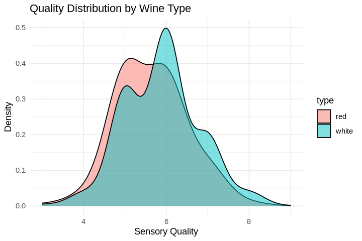
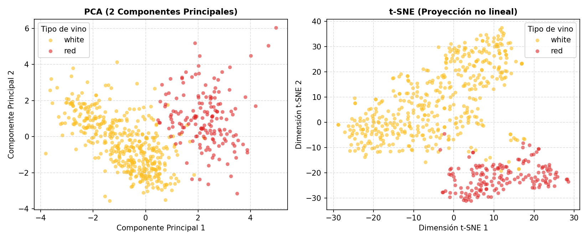
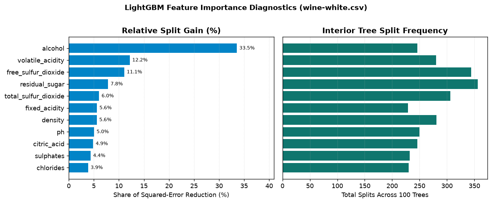
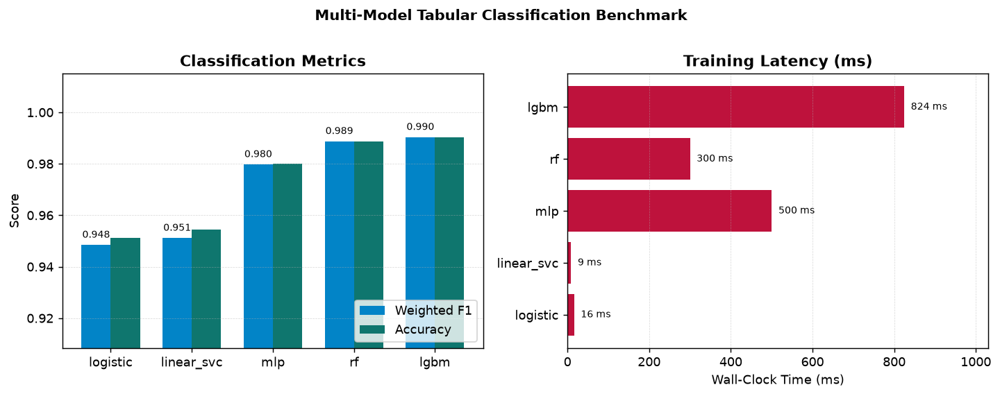

9 Modelado Políglota de Datos
La cuarta etapa del ciclo OSEMN corresponde al modelado de datos (Model), estrechamente vinculada con la evaluación empírica (iNterpret). En esta instancia, los datos han sido obtenidos (Capítulo 5), depurados y transformados (Capítulo 6), y explorados analíticamente (Capítulo 7). Abordamos ahora la construcción de modelos predictivos, descriptivos e inferenciales en los dominios del aprendizaje automático supervisado y no supervisado.
En lugar de forzar cálculos matemáticos complejos dentro de scripts de shell convencionales, la ciencia de datos contemporánea en la terminal adopta una arquitectura políglota:
- Herramientas de modelado CLI independientes: Utilidades compiladas de alto rendimiento, diseñadas específicamente para iterar con rapidez (Tapkee para reducción de dimensionalidad, Vowpal Wabbit para aprendizaje en línea fuera de memoria principal y SKLL para evaluación comparativa declarativa de modelos).
- Scripts políglotas con R y Python: Invocación
directa de scripts en R (
Rscript) para inferencia estadística clásica y scripts en Python (python3) para aprendizaje automático algorítmico mediante scikit-learn. - Nushell como orquestador universal: Nushell gestiona los pipelines de datos de extremo a extremo, estructura los flujos de variables predictoras, ejecuta procesos de modelado de forma concurrente, procesa las salidas tabulares y calcula métricas comparativas de rendimiento.
Comenzamos posicionándonos en el directorio de trabajo del capítulo
/data/ch09:
cd /data/ch09A partir de este punto, todos los ejemplos de código y pipelines de
modelado se ejecutan dentro de /data/ch09.
9.1 Preparación y Exploración del Conjunto de Datos de Vinos
Primero, revisamos los archivos de datos disponibles en
/data/ch09:
lsLos archivos wine-red.csv (1.599 vinos tintos) y
wine-white.csv (4.898 vinos blancos) registran 11
propiedades fisicoquímicas (acidez fija, acidez volátil, ácido cítrico,
azúcar residual, cloruros, dióxido de azufre libre, dióxido de azufre
total, densidad, pH, sulfatos y alcohol) junto con evaluaciones
sensoriales de calidad de 0 a 10 provenientes del conjunto de datos
clásico de vinho verde (Cortez et al.,
2009).
Concatenamos ambos conjuntos en una única tabla unificada
(wine-both.csv), creando la columna categórica
type y guardando el resultado en disco:
let red = open wine-red.csv | insert type "red"
let white = open wine-white.csv | insert type "white"
let both = $red | append $white
$both | first 5
$both | save -f wine-both-generated.csvA continuación, verificamos el balance de clases (red
frente a white) con histogram:
open wine-both.csv | histogram type
open wine-both.csv
| histogram type
| save -f wine_type_distribution.csvAntes de ajustar cualquier modelo estadístico, graficamos las
distribuciones empíricas de calidad sensorial y concentración de alcohol
entre variedades de vino mediante plot_wine_eda.R.
Mostramos su código fuente en la terminal:
bat plot_wine_eda.R#!/usr/bin/env Rscript
suppressPackageStartupMessages(library(ggplot2))
df <- read.csv("wine.csv")
p1 <- ggplot(df, aes(x = quality, fill = type)) +
geom_density(adjust = 3, alpha = 0.5) +
labs(
title = "Quality Distribution by Wine Type",
x = "Sensory Quality", y = "Density"
) +
theme_minimal()
ggsave(
"wine-quality.png",
plot = p1, width = 6, height = 4, dpi = 120
)
ggsave(
"wine_eda.png",
plot = p1, width = 6, height = 4, dpi = 120
)
p2 <- ggplot(df, aes(x = alcohol, y = quality, color = type)) +
geom_smooth(method = "loess", formula = y ~ x) +
labs(
title = "Alcohol vs. Quality by Wine Type",
x = "Alcohol (%)", y = "Sensory Quality"
) +
theme_minimal()
ggsave(
"wine-alcohol-vs-quality.png",
plot = p2, width = 6, height = 4, dpi = 120
)Tres componentes estructuran plot_wine_eda.R:
- Carga limpia de paquetes e ingesta:
suppressPackageStartupMessagesmantiene la salida estándar libre de mensajes iniciales antes de queread.csv("wine.csv")cargue las 6.497 observaciones. - Densidad condicional suavizada (
p1):geom_density(adjust = 3, alpha = 0.5)amplía el ancho de banda del núcleo gaussiano para suavizar las puntuaciones discretas de calidad entre vinos tintos y blancos. - Estimación no paramétrica de tendencias
(
p2):geom_smooth(method = "loess", formula = y ~ x)ajusta regresiones polinomiales locales de la calidad sensorial en función del porcentaje de alcohol para cada variedad, exportando gráficos rasterizados medianteggsave.
Ejecutamos el script y renderizamos wine_eda.png
directamente en la terminal con timg:
Rscript plot_wine_eda.R
timg -g 80x25 wine_eda.png
9.2 Reducción de Dimensionalidad (PCA y t-SNE)
Las tablas con alta dimensionalidad sufren frecuentemente de colinealidad pronunciada y dispersión geométrica. La reducción de dimensionalidad proyecta variables correlacionadas hacia un subespacio de baja dimensión (habitualmente dos o tres coordenadas) que retiene la varianza global o la estructura de vecindad local:
- Análisis de Componentes Principales (PCA): Proyección lineal ortogonal alineada con las direcciones de máxima varianza muestral.
- t-Distributed Stochastic Neighbor Embedding (t-SNE): Incrustación no lineal de variedades que convierte distancias euclidianas entre pares en probabilidades condicionales para preservar vecindades locales.
9.2.1 Reducción de Dimensionalidad con Herramientas CLI
El contenedor dsin incorpora Tapkee (Lisitsyn et al.,
2013), una biblioteca de plantillas en C++ compilada para cálculos
rápidos de reducción dimensional espectral y sobre variedades. Al igual
que la mayoría de los ejecutables numéricos en C++, tapkee
no procesa esquemas de Nushell, nombres de columnas ni etiquetas de
texto. Requiere un archivo sin encabezados compuesto por números en
punto flotante separados por un delimitador explícito
(--delimiter ",") y genera un archivo de salida con
coordenadas sin nombres de fila.
Ejecutar tapkee directamente exige un pipeline de tres
etapas en Nushell: preprocesar la matriz de entrada, invocar el
ejecutable nativo y posprocesar el flujo resultante de coordenadas. En
primer lugar, seleccionamos 200 observaciones de
wine-both.csv, descartamos type y
quality para conservar únicamente las 11 mediciones
continuas, serializamos una matriz CSV sin encabezados y llamamos a
tapkee:
let sample_w = open wine-both.csv | first 200
$sample_w
| reject type quality
| to csv --noheaders
| save -f wine_matrix.csv
let tk_cmd = [
"-i" "wine_matrix.csv" "-o" "wine_pca_raw.csv"
"-m" "pca" "-td" "2" "--delimiter" ","
]
tapkee ...$tk_cmd
open --raw wine_pca_raw.csv | lines | first 5Al examinar la salida sin procesar observamos pares de coordenadas
separados por comas (-1.67715,-16.4492) sin encabezados ni
identificadores de fila. Dado que tapkee preserva el orden
secuencial de entrada, convertimos el archivo de vuelta a una tabla de
Nushell, asignamos nombres descriptivos de columna (dim_1,
dim_2), redondeamos cada valor a cuatro decimales y unimos
horizontalmente la proyección sobre $sample_w:
let coords = open --raw wine_pca_raw.csv
| from csv --noheaders
| rename dim_1 dim_2
| update dim_1 { into float | math round -p 4 }
| update dim_2 { into float | math round -p 4 }
let direct_pca = $sample_w
| merge $coords
| select type quality dim_1 dim_2
$direct_pca | first 5
rm -f wine_matrix.csv wine_pca_raw.csvRepetir manualmente esta secuencia (aislar variables, crear el CSV
temporal, ejecutar el binario externo, convertir a tipos flotantes, unir
tablas y eliminar archivos) en cada exploración sobrecarga las sesiones
interactivas. En dsin_tools.nu, el comando personalizado
tapkee-reduce encapsula estas operaciones
bajo una firma tipada table -> table. Para inspeccionar
su implementación directamente en la terminal, ejecutamos
view-code tapkee-reduce:
view-code tapkee-reduce# Run Tapkee dimensionality reduction on a numeric table.
export def tapkee-reduce [
--method(-m): string = "pca"
--target-dim(-d): int = 2
--label-col(-l): string
--cols(-c): list<string>
]: table -> table {
let tbl = $in
let norm_m = if $method == "tsne" { "t-sne" } else { $method }
let has_cols = ($cols != null) and (($cols | length) > 0)
let has_lbl = if ($label_col != null) {
$label_col in ($tbl | columns)
} else { false }
let num_tbl = if $has_cols {
$tbl | select ...$cols
} else if $has_lbl {
$tbl | reject $label_col
} else {
let non_num = ["type"] | where { |c| $c in ($tbl | columns) }
if ($non_num | is-not-empty) {
$tbl | reject ...$non_num
} else {
$tbl
}
}
let tmp_in = mktemp --suffix ".csv"
let tmp_out = mktemp --suffix ".tsv"
$num_tbl | to csv --noheaders | save -f $tmp_in
let tk_args = [
"-i" $tmp_in "-o" $tmp_out
"-m" $norm_m "-td" ($target_dim | into string)
"--delimiter" ","
]
tapkee ...$tk_args
let raw_coords = open --raw $tmp_out
| lines
| where ($it | str trim | is-not-empty)
rm -f $tmp_in $tmp_out
let coords_tbl = $raw_coords | each { |line|
let parts = $line
| split row ","
| each { |v| $v | str trim | into float | math round -p 4 }
mut rec = {}
for idx in 0..<($parts | length) {
let val = $parts | get $idx
let k1 = $"dim($idx + 1)"
let k2 = $"dim_($idx + 1)"
$rec = $rec | insert $k1 $val | insert $k2 $val
}
$rec
}
$tbl | merge $coords_tbl
}Cuatro decisiones de diseño transforman el binario de C++ en un operador componible de la shell:
- Filtrado flexible del esquema: Permite indicar
columnas explícitas (
--cols), excluir una etiqueta objetivo (--label-col) o descartar automáticamente columnas categóricas comotype, conservando todas las columnas originales en$tblpara la unión final. - Normalización de alias: Convierte
--method tsneen el identificador canónico"t-sne"de Tapkee para evitar fallos por variaciones tipográficas en la consola. - Gestión higiénica de archivos efímeros: Asigna
rutas temporales mediante
mktempy las elimina inmediatamente después de leer$tmp_out, impidiendo la acumulación de archivos residuales en/data/ch09. - Reconstrucción dimensional arbitraria: Genera
registros dinámicos
dim_1,dim_2, …,dim_dpara cualquier valor indicado en--target-dimantes de ejecutar$tbl | merge $coords_tbl.
Replicamos ahora la misma proyección PCA sobre 200 observaciones
utilizando tapkee-reduce, obteniendo exactamente las mismas
coordenadas en una sola instrucción:
let features = [
"fixed_acidity" "volatile_acidity" "citric_acid"
"residual_sugar" "chlorides" "free_sulfur_dioxide"
"total_sulfur_dioxide" "density" "ph" "sulphates" "alcohol"
]
let pca_res = open wine-both.csv
| first 200
| tapkee-reduce --method pca --cols $features
| select type quality dim_1 dim_2
$pca_res | first 5
$pca_res | save -f wine_pca_tapkee.csvCambiando --method pca por --method t-sne
calculamos una incrustación no lineal bidimensional a través de la misma
interfaz:
let tsne_res = open wine-both.csv
| first 150
| tapkee-reduce --method t-sne --cols $features
| select type quality dim_1 dim_2
$tsne_res | first 5
$tsne_res | save -f wine_tsne_tapkee.csv
9.2.2 Reducción de Dimensionalidad con Rscript
Mientras que tapkee destaca por su velocidad de
proyección, el diagnóstico estadístico formal requiere examinar los
valores propios y la proporción acumulada de varianza explicada. El
script pca_wine.R realiza una descomposición en valores
singulares estandarizada en R (prcomp) y emite el resumen
de varianza directamente hacia la salida estándar:
bat pca_wine.R#!/usr/bin/env Rscript
df <- read.csv("wine.csv", stringsAsFactors = FALSE)
num_cols <- setdiff(names(df), c("type", "quality"))
pca <- prcomp(df[, num_cols], center = TRUE, scale. = TRUE)
var_exp <- (pca$sdev^2) / sum(pca$sdev^2) * 100
# Save loadings summary to stdout as CSV
out <- data.frame(
component = paste0("PC", 1:5),
std_dev = round(pca$sdev[1:5], 4),
pct_variance = round(var_exp[1:5], 2),
cum_variance = round(cumsum(var_exp)[1:5], 2)
)
write.csv(out, stdout(), row.names = FALSE, quote = FALSE)
# Also save 2D coordinates to wine_pca_r.csv
coords <- data.frame(
pc1 = round(pca$x[, 1], 4),
pc2 = round(pca$x[, 2], 4),
type = df$type,
quality = df$quality
)
write.csv(coords, "wine_pca_r.csv", row.names = FALSE, quote = FALSE)Observamos las tres etapas estadísticas y de entrada/salida en
pca_wine.R:
- Aislamiento de variables y estandarización z-score:
setdiffexcluyetypeyquality, mientras queprcomp(..., center = TRUE, scale. = TRUE)escala las 11 variables a varianza unitaria para evitar que predictores con magnitudes elevadas (comototal_sulfur_dioxide) dominen artificialmentePC1. - Descomposición espectral de varianza: Elevar al
cuadrado los valores singulares (
pca$sdev^2) produce los valores propios de cada componente, a partir de los cuales se derivan los porcentajes de varianza marginal (var_exp) y acumulada (cumsum(var_exp)). - Doble salida tabular:
write.csv(out, stdout(), ...)emite el resumen de 5 componentes hacia la salida estándar para el lectorfrom csvde Nushell, mientras almacena las coordenadas bidimensionales completas (pca$x[, 1:2]) enwine_pca_r.csv.
Ejecutar Rscript pca_wine.R | from csv convierte la
salida de R en una tabla estructurada de Nushell:
let pca_r = Rscript pca_wine.R | from csv
$pca_r
$pca_r | save -f wine_pca_summary_r.csvLos primeros cuatro componentes principales explican el 73,37% de la
varianza fisicoquímica total entre los 11 predictores (PC1
por sí solo captura el 27,54%, impulsado por el contraste entre los
niveles de dióxido de azufre en vinos blancos y la acidez volátil en
tintos).
9.2.3 Reducción de Dimensionalidad con Python
El script complementario pca_wine.py replica la misma
descomposición ortogonal utilizando scikit-learn:
bat pca_wine.py#!/usr/bin/env python3
import sys
import pandas as pd
from sklearn.decomposition import PCA
from sklearn.preprocessing import StandardScaler
df = pd.read_csv("wine.csv")
feat_cols = [c for c in df.columns if c not in ("type", "quality")]
X = StandardScaler().fit_transform(df[feat_cols])
pca = PCA(n_components=5, random_state=42)
coords = pca.fit_transform(X)
proj = pd.DataFrame({
"pc1": coords[:, 0].round(4),
"pc2": coords[:, 1].round(4),
"type": df["type"],
"quality": df["quality"],
})
proj.to_csv("wine_pca_py.csv", index=False)
pct = pca.explained_variance_ratio_ * 100.0
summary = pd.DataFrame({
"component": [f"PC{i + 1}" for i in range(5)],
"explained_variance": pca.explained_variance_.round(4),
"pct_variance": pct.round(2),
"cum_variance": pct.cumsum().round(2),
})
summary.to_csv(sys.stdout, index=False)Tres elementos clave alinean pca_wine.py con su versión
en R:
- Escalamiento explícito de la matriz: A diferencia
de
prcomp(scale. = TRUE)en R, la clasePCAdescikit-learncentra las variables sin escalarlas; aplicarStandardScaler().fit_transformcon anterioridad asegura una estructura idéntica de autovalores sobre la matriz de correlaciones. - Proyección por SVD truncada:
PCA(n_components=5, random_state=42)extrae los cinco primeros componentes ortogonales y guarda las proyecciones individuales (pc1,pc2) enwine_pca_py.csv. - Serialización a la salida estándar: Escribir
summary.to_csv(sys.stdout, index=False)permite que Nushell captureexplained_variance,pct_varianceycum_variancedirectamente mediantefrom csv.
Ejecutamos pca_wine.py y comprobamos que Python y R
coinciden con dos decimales de precisión tanto en la varianza marginal
como en la acumulada:
let pca_py = python3 pca_wine.py | from csv
$pca_py9.2.4 Diagnóstico de Multicolinealidad (VIF) y Regresión de Componentes Principales (PCR)
La correlación severa entre variables predictoras infla la varianza de las pendientes estimadas por Mínimos Cuadrados Ordinarios (OLS), volviendo los coeficientes inestables ante perturbaciones menores en la muestra. Para cada variable , el Factor de Inflación de la Varianza se define como , donde es el coeficiente de determinación obtenido al efectuar la regresión de sobre todas las demás variables predictoras. Valores superiores a 10 indican colinealidad aguda.
Utilizando las mediciones morfométricas de 159 peces en
Fish.csv, el script vif_pcr_fish.py calcula
los valores exactos de VIF y compara el modelo OLS completo de 5
predictores frente a una Regresión de Componentes Principales
(PCR) sobre los dos primeros componentes ortogonales:
bat vif_pcr_fish.py#!/usr/bin/env python3
import sys
import numpy as np
import pandas as pd
from sklearn.decomposition import PCA
from sklearn.linear_model import LinearRegression
from sklearn.metrics import mean_squared_error, r2_score
df = pd.read_csv("Fish.csv")
pred_cols = ["Length1", "Length2", "Length3", "Height", "Width"]
X = df[pred_cols]
y = df["Weight"]
vif_rows = []
for col in pred_cols:
X_other = X.drop(columns=[col])
reg = LinearRegression().fit(X_other, X[col])
r2_i = reg.score(X_other, X[col])
vif = 1.0 / (1.0 - r2_i) if r2_i < 0.99999 else 9999.0
vif_rows.append({"feature": col, "vif": round(float(vif), 2)})
pd.DataFrame(vif_rows).to_csv("fish_vif_py.csv", index=False)
ols = LinearRegression().fit(X, y)
ols_p = ols.predict(X)
ols_r2 = r2_score(y, ols_p)
ols_rmse = np.sqrt(mean_squared_error(y, ols_p))
X_pca = PCA(n_components=2).fit_transform(X)
pcr = LinearRegression().fit(X_pca, y)
pcr_p = pcr.predict(X_pca)
pcr_r2 = r2_score(y, pcr_p)
pcr_rmse = np.sqrt(mean_squared_error(y, pcr_p))
comp_df = pd.DataFrame([
{
"model": "Python_OLS_Multiple_Regression",
"components": 5,
"r2": round(float(ols_r2), 4),
"rmse": round(float(ols_rmse), 2),
},
{
"model": "Python_PCR_Principal_Components",
"components": 2,
"r2": round(float(pcr_r2), 4),
"rmse": round(float(pcr_rmse), 2),
},
])
comp_df.to_csv("fish_pcr_py.csv", index=False)
comp_df.to_csv(sys.stdout, index=False)Tres bloques algorítmicos componen vif_pcr_fish.py:
- Regresiones auxiliares de predictores
(
vif_rows): Itera sobre los cinco predictores morfométricos, ajustandoX[col]contraX_otherpara calcular y exportar la tabla de diagnóstico haciafish_vif_py.csv. - Ajuste OLS de referencia: Estima la regresión
lineal múltiple sin restricciones sobre las cinco variables
correlacionadas, registrando el
muestral y la raíz del error cuadrático medio
(
ols_rmse). - Reducción ortogonal con PCR: Proyecta
Xen dos ejes principales no correlacionados (PCA(n_components=2)) antes de ajustarLinearRegression, escribiendo las métricas comparativas enfish_pcr_py.csvysys.stdout.
Ejecutar el script en Nushell evidencia una colinealidad extrema
entre las tres medidas de longitud (Length1,
Length2 y Length3 superan
),
mientras que dos componentes ortogonales preservan
:
python3 vif_pcr_fish.py | from csv
open fish_vif_py.csv | sort-by vif -rValidamos la misma comparación de PCR en R mediante
vif_pcr_fish.R:
bat vif_pcr_fish.R#!/usr/bin/env Rscript
df <- read.csv("Fish.csv")
pred_cols <- c("Length1", "Length2", "Length3", "Height", "Width")
X <- df[, pred_cols]
y <- df$Weight
fit_ols <- lm(Weight ~ ., data = df[, c(pred_cols, "Weight")])
r2_ols <- summary(fit_ols)$r.squared
rmse_ols <- sqrt(mean(residuals(fit_ols)^2))
pca <- prcomp(X, scale. = TRUE)
fit_pcr <- lm(y ~ pca$x[, 1:2])
r2_pcr <- summary(fit_pcr)$r.squared
rmse_pcr <- sqrt(mean(residuals(fit_pcr)^2))
out_comp <- data.frame(
model = c(
"R_OLS_Multiple_Regression", "R_PCR_Principal_Components"
),
components = c(5, 2),
r2 = round(c(r2_ols, r2_pcr), 4),
rmse = round(c(rmse_ols, rmse_pcr), 2)
)
write.csv(
out_comp, "fish_pcr_r.csv", row.names = FALSE, quote = FALSE
)
write.csv(out_comp, stdout(), row.names = FALSE, quote = FALSE)En vif_pcr_fish.R, lm(Weight ~ .) ajusta el
modelo lineal completo de cinco variables,
prcomp(X, scale. = TRUE) genera los componentes principales
estandarizados (pca$x[, 1:2]) y
lm(y ~ pca$x[, 1:2]) efectúa la regresión del peso de los
peces sobre esas dos puntuaciones ortogonales antes de emitir la tabla
comparativa hacia stdout():
Rscript vif_pcr_fish.R | from csv9.3 Agrupamiento o Clustering
El agrupamiento (clustering) particiona observaciones sin etiquetar en grupos cohesivos, de modo que los registros dentro de un mismo clúster compartan perfiles de atributos similares mientras que las observaciones entre distintos clústeres permanezcan claramente diferenciadas. Debido a que no existe una etiqueta de respuesta supervisada que guíe la optimización, el escalamiento geométrico y la validación estadística posterior determinan si las particiones descubiertas reflejan una estructura empírica genuina o simples artificios numéricos.
Esta sección examina cuatro familias complementarias de agrupamiento:
- Clustering K-Means: Reubicación iterativa de centroides minimizando la suma de cuadrados dentro de los grupos (WCSS).
- Clustering Jerárquico Aglomerativo: Construcción ascendente de dendrogramas mediante el enlace de varianza mínima de Ward.
- Validación Multimétrica y Visual de Clústeres: Selección conjunta de a través de curvas de codo de inercia, coeficientes de silueta, índices de varianza de Calinski-Harabasz y puntuaciones de Davies-Bouldin.
- Métodos Basados en Densidad y Medoides (DBSCAN y PAM): Aislamiento de valores atípicos morfológicos como ruido explícito y sustitución de promedios aritméticos sensibles por medoides muestrales observados.
9.3.1 Clustering K-Means
A diferencia de tapkee, compilado como un binario nativo
en C++, nuestro pipeline tabular de K-Means delega la optimización
numérica en un script auxiliar en Python
(kmeans_cluster.py) basado en scikit-learn y
preparado para flujos de datos. Mantener el núcleo computacional en un
script .py explícito en lugar de incrustar código
interpretado dentro de funciones de shell permite inspeccionar, probar y
ejecutar la lógica de agrupamiento de forma autónoma antes de integrarla
en Nushell.
Abrimos kmeans_cluster.py en /data/ch09 con
bat:
bat kmeans_cluster.py#!/usr/bin/env python3
"""Partition numeric columns via standardized K-Means clustering."""
import argparse
import sys
import pandas as pd
from sklearn.cluster import KMeans
from sklearn.preprocessing import StandardScaler
def main():
p = argparse.ArgumentParser(description="K-Means CLI helper.")
p.add_argument("--input", "-i", default="-")
p.add_argument("--k", "-k", type=int, default=2)
p.add_argument("--exclude", "-e", default="type")
p.add_argument("--cols", "-c", default="")
args = p.parse_args()
src = sys.stdin if args.input == "-" else args.input
df = pd.read_csv(src)
if args.cols:
num_cols = [
c for c in args.cols.split(",") if c in df.columns
]
else:
excl = set(
x.strip() for x in args.exclude.split(",") if x.strip()
)
excl.add("type")
num_cols = [
c for c in df.columns
if c not in excl and pd.api.types.is_numeric_dtype(df[c])
]
X = StandardScaler().fit_transform(df[num_cols])
km = KMeans(n_clusters=args.k, n_init=10, random_state=42)
labels = km.fit_predict(X)
df["cluster"] = [f"cluster_{c + 1}" for c in labels]
df.to_csv(sys.stdout, index=False)
if __name__ == "__main__":
main()Tres decisiones de diseño permiten que kmeans_cluster.py
opere como un filtro Unix tradicional:
- Ingesta desde flujo estándar o archivo
(
--input -): Leer desdesys.stdincuando--inputtoma el valor predeterminado"-"permite que tablas de Nushell serializadas conto csvingresen directamente a Python sin necesidad de archivos intermedios, mientras que--colsy--excludeevitan que variables de respuesta (quality,type) contaminen la matriz de atributos. - Estandarización
-score
indispensable: La distancia euclidiana no es invariante ante
cambios de escala; sin
StandardScaler(), la variabletotal_sulfur_dioxide(con valores entre 6 y 440 mg/L) eclipsaría achlorides(entre 0.009 y 0.611 g/L). - Iteraciones Lloyd multi-inicio deterministas: La
configuración
KMeans(n_clusters=args.k, n_init=10, random_state=42)ejecuta diez inicializaciones independientes de centroides (k-means++), conserva la solución con menor inercia, añade etiquetas legibles (cluster_1, …,cluster_K) y canaliza la salida CSV haciasys.stdout.
Antes de utilizar cualquier función envoltorio en Nushell, ejecutamos
kmeans_cluster.py directamente en un pipeline básico:
Nushell serializa wine-both.csv a formato CSV sobre la
salida estándar, Python calcula dos clústeres estandarizados excluyendo
type y quality, y Nushell procesa el flujo
retornado mediante from csv para tabular los clústeres
frente a las variedades reales en Polars:
let raw_km = open wine-both.csv
| to csv
| python3 kmeans_cluster.py --k 2 --exclude "type,quality"
| from csv
$raw_km
| select type quality alcohol volatile_acidity cluster
| first 5
$raw_km
| polars into-df
| polars group-by cluster type
| polars agg [
(polars col quality | polars count | polars as n_wines)
(polars col alcohol | polars mean | polars as mean_alcohol)
]
| polars collect
| polars into-nu
| sort-by cluster typeObservamos los resultados en la tabla de contingencia: sin haber
accedido jamás a la columna type, la partición euclidiana
no supervisada en el espacio químico estandarizado de once dimensiones
asigna más del 98.5% de los vinos tintos a un grupo y más del 98.5% de
los vinos blancos al otro.
Para evitar la serialización manual con to csv y
from csv y aprovechar el autocompletado nativo de
argumentos en la terminal, dsin_tools.nu define el comando
kmeans-cluster. Inspeccionamos su
implementación en la terminal mediante
view-code kmeans-cluster:
view-code kmeans-cluster# Partition numeric columns via standardized K-Means clustering.
export def kmeans-cluster [
--k(-k): int = 2
--clusters: int = 0
--label-col(-l): string
--cols(-c): list<string>
]: table -> table {
let tbl = $in
let n_k = if $clusters > 0 { $clusters } else { $k }
let tmp_in = mktemp --suffix ".csv"
$tbl | to csv | save -f $tmp_in
let lbl = $label_col | default "type"
let cols_flag = if ($cols != null) and (($cols | length) > 0) {
["--cols" ($cols | str join ",")]
} else { [] }
let bin_p = "/usr/local/bin/kmeans-cluster-py"
let py_km = if ($bin_p | path exists) {
$bin_p
} else if ("/data/ch09/kmeans_cluster.py" | path exists) {
"/data/ch09/kmeans_cluster.py"
} else {
"kmeans_cluster.py"
}
let km_args = [
"--input" $tmp_in
"--k" ($n_k | into string)
"--exclude" $lbl
...$cols_flag
]
let res = python3 $py_km ...$km_args | from csv
rm -f $tmp_in
$res
}Dentro de kmeans-cluster, Nushell convierte el parámetro
--cols desde una lista tipada
list<string> hacia un indicador delimitado por comas
mediante expansión de argumentos (...$cols_flag), localiza
el script instalado (/usr/local/bin/kmeans-cluster-py) para
permitir su invocación desde cualquier directorio y elimina
$tmp_in antes de retornar la tabla enriquecida.
Ejecutar este mismo procedimiento con kmeans-cluster
reduce la tarea a un pipeline conciso y fuertemente tipado:
let features = [
"fixed_acidity" "volatile_acidity" "citric_acid"
"residual_sugar" "chlorides" "free_sulfur_dioxide"
"total_sulfur_dioxide" "density" "ph" "sulphates" "alcohol"
]
let clustered = open wine-both.csv
| kmeans-cluster --k 2 --cols $features
$clustered
| select type quality alcohol volatile_acidity cluster
| first 5
$clustered
| select type quality alcohol volatile_acidity cluster
| save -f wine_kmeans_cli.csv
$clustered
| polars into-df
| polars group-by cluster type
| polars agg [
(polars col quality | polars count | polars as n_vinos)
(polars col alcohol | polars mean | polars as mean_alcohol)
]
| polars collect
| polars into-nu
| sort-by cluster type
| tee { save -f wine_kmeans_contingency.csv }9.3.2 Diagnósticos de K-Means en R y Python
Al documentar particiones en estudios estadísticos formales, resulta
indispensable reportar la suma de cuadrados intra-clúster
(withinss) y diagnosticar la estabilidad de las soluciones
obtenidas. En R, el script cluster_wine.R ajusta un modelo
K-Means con 20 reinicios aleatorios (nstart = 20) y evalúa
la pureza de los grupos directamente:
bat cluster_wine.R#!/usr/bin/env Rscript
set.seed(42)
df <- read.csv("wine.csv", stringsAsFactors = FALSE)
num_cols <- setdiff(names(df), c("type", "quality"))
X <- scale(df[, num_cols])
km <- kmeans(X, centers = 2, nstart = 20)
df$cluster <- paste0("cluster_", km$cluster)
keep_cols <- c(
"type", "quality", "alcohol", "volatile_acidity", "cluster"
)
write.csv(
df[, keep_cols], "wine_kmeans_r.csv",
row.names = FALSE, quote = FALSE
)
tab <- as.data.frame.matrix(table(df$cluster, df$type))
out <- data.frame(
cluster = rownames(tab),
size = as.integer(km$size),
withinss = round(km$withinss, 2),
red_count = tab$red,
white_count = tab$white,
dominant_type = ifelse(tab$red > tab$white, "red", "white")
)
write.csv(out, stdout(), row.names = FALSE, quote = FALSE)Observamos cómo cluster_wine.R estandariza los
predictores mediante scale(), ejecuta el algoritmo de
Hartigan-Wong sobre 20 inicios independientes
(kmeans(X, centers = 2, nstart = 20)) y consolida los
tamaños muestrales (km$size), la dispersión interna
(km$withinss) y las frecuencias de contingencia
(table(df$cluster, df$type)) en una tabla CSV emitida
directamente a stdout():
let km_r = Rscript cluster_wine.R | from csv
$km_r
$km_r | save -f wine_clusters_r.csvEn Python, el script cluster_wine.py explora valores de
para examinar cómo evolucionan la inercia, el ancho promedio de silueta
y las iteraciones de convergencia a medida que se subdividen las
observaciones:
bat cluster_wine.py#!/usr/bin/env python3
import sys
import pandas as pd
from sklearn.cluster import KMeans
from sklearn.metrics import silhouette_score
from sklearn.preprocessing import StandardScaler
df = pd.read_csv("wine.csv")
feat_cols = [c for c in df.columns if c not in ("type", "quality")]
X = StandardScaler().fit_transform(df[feat_cols])
rows = []
for k in [2, 3, 4, 5]:
km = KMeans(n_clusters=k, n_init=10, random_state=42)
labels = km.fit_predict(X)
sil = silhouette_score(
X, labels, sample_size=1500, random_state=42
)
if k == 2:
keep = ["type", "quality", "alcohol", "volatile_acidity"]
df_out = df[keep].copy()
df_out["cluster"] = [f"cluster_{c + 1}" for c in labels]
df_out.to_csv("wine_kmeans_py.csv", index=False)
rows.append({
"k_clusters": k,
"inertia": round(float(km.inertia_), 2),
"silhouette": round(float(sil), 4),
"iterations": int(km.n_iter_),
})
pd.DataFrame(rows).to_csv(sys.stdout, index=False)Dentro del ciclo,
silhouette_score(..., sample_size=1500, random_state=42)
estima el contraste cohesión-separación en tiempo
sobre una submuestra fija para evitar el costo cuadrático de
distancias por pares, guardando las asignaciones para
y transmitiendo la tabla métrica hacia sys.stdout:
let km_py = python3 cluster_wine.py | from csv
$km_py
$km_py | save -f wine_clusters_py.csv9.3.3 Clustering Jerárquico Aglomerativo
A diferencia de K-Means, que requiere prefijar
antes del ajuste, el agrupamiento jerárquico aglomerativo construye un
árbol binario completo de uniones (dendrograma) desde
hojas individuales hasta una raíz unificada. El criterio de mínima
varianza de Ward (ward.D2) fusiona en cada etapa el par de
grupos que genera el menor incremento en la suma total de cuadrados
intra-clúster.
Comenzamos con la implementación en R contenida en
hclust_fish.R:
bat hclust_fish.R#!/usr/bin/env Rscript
df <- read.csv("Fish.csv", stringsAsFactors = FALSE)
num_cols <- c(
"Weight", "Length1", "Length2", "Length3", "Height", "Width"
)
X <- scale(df[, num_cols])
d <- dist(X, method = "euclidean")
hc <- hclust(d, method = "ward.D2")
df$cluster <- paste0("cluster_", cutree(hc, k = 3))
keep <- c("Species", "Weight", "Height", "Width", "cluster")
write.csv(
df[, keep], "fish_hclust_r.csv", row.names = FALSE, quote = FALSE
)
tab <- as.data.frame.matrix(table(df$cluster, df$Species))
dom_idx <- max.col(tab, ties.method = "first")
out <- data.frame(
cluster = rownames(tab),
total_samples = as.integer(rowSums(tab)),
dominant_species = colnames(tab)[dom_idx],
dominant_count = apply(tab, 1, max)
)
write.csv(out, stdout(), row.names = FALSE, quote = FALSE)Tres operaciones definen hclust_fish.R:
dist(X, method = "euclidean") calcula la matriz de
distancias por pares de
sobre las variables morfométricas estandarizadas,
hclust(d, method = "ward.D2") genera el dendrograma de
varianza mínima y cutree(hc, k = 3) divide el árbol en tres
grupos morfológicos cuyas especies biológicas predominantes se resumen
mediante max.col(tab):
let hc_r = Rscript hclust_fish.R | from csv
$hc_r
$hc_r | save -f fish_hclust_r.csvEl script complementario hclust_fish.py evalúa los
coeficientes de silueta a través de cortes de árbol con
utilizando AgglomerativeClustering:
bat hclust_fish.py#!/usr/bin/env python3
import sys
import pandas as pd
from sklearn.cluster import AgglomerativeClustering
from sklearn.metrics import silhouette_score
from sklearn.preprocessing import StandardScaler
df = pd.read_csv("Fish.csv")
num_cols = [
"Weight", "Length1", "Length2", "Length3", "Height", "Width"
]
X = StandardScaler().fit_transform(df[num_cols])
rows = []
for k in [2, 3, 4, 5]:
model = AgglomerativeClustering(n_clusters=k, linkage="ward")
labels = model.fit_predict(X)
sil = silhouette_score(X, labels)
if k == 3:
df_out = df[["Species", "Weight", "Height", "Width"]].copy()
df_out["cluster"] = [f"cluster_{c + 1}" for c in labels]
df_out.to_csv("fish_hclust_py.csv", index=False)
rows.append({
"linkage": "ward",
"n_clusters": k,
"silhouette": round(float(sil), 4),
})
pd.DataFrame(rows).to_csv(sys.stdout, index=False)Tras el escalamiento
-score
(StandardScaler),
AgglomerativeClustering(n_clusters=k, linkage="ward")
calcula las uniones deterministas de Ward, almacena las asignaciones con
y canaliza las puntuaciones de silueta para cada nivel de corte hacia
sys.stdout:
let hc_py = python3 hclust_fish.py | from csv
$hc_py9.3.4 Validación Multimétrica y Diagnóstico Visual del Codo
Seleccionar la cantidad de grupos examinando únicamente el decrecimiento monótono de la inercia WCSS puede resultar subjetivo cuando la curvatura del codo es gradual. Una validación rigurosa combina la inercia con criterios analíticos internos de separación:
- Coeficiente de Silueta (, mayor es mejor): Contrasta la distancia media intra-clúster frente a la distancia hacia el clúster vecino más próximo mediante .
- Índice Calinski-Harabasz (mayor es mejor): Razón entre la dispersión inter-clúster y la dispersión intra-clúster, ajustada por sus respectivos grados de libertad.
- Índice Davies-Bouldin (menor es mejor): Razón promedio de similitud en el peor de los casos entre cada clúster y su competidor más cercano.
Sobre el conjunto de datos bancarios banco.csv, el
script cluster_eval.py calcula las cuatro métricas para
considerando edad, ingresos, gasto en tarjeta y saldo hipotecario de los
clientes:
bat cluster_eval.py#!/usr/bin/env python3
import sys
import pandas as pd
from sklearn.cluster import KMeans
from sklearn.metrics import (
calinski_harabasz_score,
davies_bouldin_score,
silhouette_score,
)
from sklearn.preprocessing import StandardScaler
df = pd.read_csv("banco.csv")
features = ["edad", "ingreso", "gasto_tarjeta", "hipoteca"]
X = StandardScaler().fit_transform(df[features])
rows = []
for k in range(2, 7):
km = KMeans(n_clusters=k, n_init=10, random_state=42)
labels = km.fit_predict(X)
sil = silhouette_score(
X, labels, sample_size=1000, random_state=42
)
ch = calinski_harabasz_score(X, labels)
db = davies_bouldin_score(X, labels)
rows.append({
"k": k,
"inertia": round(float(km.inertia_), 2),
"silhouette": round(float(sil), 4),
"calinski_harabasz": round(float(ch), 2),
"davies_bouldin": round(float(db), 4),
})
pd.DataFrame(rows).to_csv(sys.stdout, index=False)En cluster_eval.py, StandardScaler
homogeniza las escalas monetarias y etarias, el ciclo
range(2, 7) evalúa cada modelo ajustado sobre los tres
índices simultáneamente y la exportación
pd.DataFrame(rows).to_csv(sys.stdout, index=False) emite
una tabla de evaluación ordenada directamente en Nushell:
let eval_b = python3 cluster_eval.py | from csv
$eval_b | save -f banco_cluster_eval.csv
$eval_b | sort-by silhouette -rPara visualizar la curvatura de la inercia y los puntos máximos de
silueta en una exploración más amplia
()
sobre wine-both.csv, utilizamos el script de diagnóstico
gráfico plot_kmeans_elbow.py:
bat plot_kmeans_elbow.py#!/opt/modern-ml/bin/python
"""Render K-Means inertia and silhouette curves (k = 2..10)."""
import os
import sys
import warnings
os.environ.setdefault("MPLCONFIGDIR", "/tmp/matplotlib_cache")
warnings.filterwarnings("ignore")
import matplotlib
matplotlib.use("Agg")
import matplotlib.pyplot as plt
import numpy as np
import pandas as pd
from sklearn.cluster import KMeans
from sklearn.metrics import silhouette_score
from sklearn.preprocessing import StandardScaler
def main():
csv_in = sys.argv[1] if len(sys.argv) > 1 else "wine-both.csv"
png_out = (
sys.argv[2] if len(sys.argv) > 2 else "kmeans_elbow.png"
)
df = pd.read_csv(csv_in)
drop_c = [c for c in ("type", "quality") if c in df.columns]
num_df = df.drop(columns=drop_c).select_dtypes(
include=[np.number]
)
X = StandardScaler().fit_transform(num_df)
ks = list(range(2, 11))
inertias, sils = [], []
for k in ks:
km = KMeans(n_clusters=k, n_init=10, random_state=42)
labels = km.fit_predict(X)
inertias.append(km.inertia_)
sil = silhouette_score(
X, labels, sample_size=1500, random_state=42
)
sils.append(sil)
best_k = ks[int(np.argmax(sils))]
fig, (ax1, ax2) = plt.subplots(
1, 2, figsize=(10.5, 4.2), dpi=130
)
ax1.plot(ks, inertias, "o-", color="#0284c7", lw=2, ms=6)
ax1.axvline(best_k, color="#be123c", ls="--", lw=1.2)
ax1.set_title("Within-Cluster Inertia", fontweight="bold")
ax1.set_xlabel("Number of Clusters (k)")
ax1.set_ylabel("Inertia (WCSS)")
ax1.set_xticks(ks)
ax1.grid(True, ls="--", lw=0.4, alpha=0.5)
ax2.plot(ks, sils, "s-", color="#0f766e", lw=2, ms=6)
ax2.axvline(
best_k, color="#be123c", ls="--", lw=1.2,
label=f"Optimal k = {best_k}"
)
ax2.set_title("Mean Silhouette Score", fontweight="bold")
ax2.set_xlabel("Number of Clusters (k)")
ax2.set_ylabel("Silhouette Score")
ax2.set_xticks(ks)
ax2.legend(loc="best", frameon=True)
ax2.grid(True, ls="--", lw=0.4, alpha=0.5)
fig.suptitle(
f"K-Means Cluster Validation ({csv_in})",
fontsize=11.5, fontweight="bold", y=1.01
)
fig.tight_layout()
fig.savefig(png_out, bbox_inches="tight", dpi=130)
print(f"Saved {png_out} (optimal k={best_k})")
if __name__ == "__main__":
main()Observamos la estructura de plot_kmeans_elbow.py: toma
los archivos de entrada y salida mediante argumentos de línea de
comandos, estandariza los atributos fisicoquímicos continuos, calcula
iteraciones de K-Means con diez reinicios deterministas para cada
y dibuja un panel comparativo dual (curva WCSS en el panel izquierdo y
silueta promedio en el panel derecho con una línea vertical destacando
el óptimo
).
Genere kmeans_elbow.png y examine el resultado gráfico en
la terminal mediante timg:
python plot_kmeans_elbow.py wine-both.csv kmeans_elbow.png
timg -g 80x25 kmeans_elbow.png
9.3.5 Clustering Basado en Densidad con DBSCAN y K-Medoides con PAM
Los algoritmos K-Means y jerárquicos de Ward asumen implícitamente
grupos de morfología esférica y dimensiones similares, lo que los vuelve
vulnerables a valores atípicos aislados. DBSCAN
(Density-Based Spatial Clustering of Applications with Noise,
Ester et al., 1996) supera estas restricciones descubriendo densidades
continuas de geometría arbitraria y marcando de forma explícita las
observaciones periféricas como ruido estadístico (etiqueta
-1).
Examinamos dbscan_fish.py en
/data/ch09:
bat dbscan_fish.py#!/usr/bin/env python3
import sys
import pandas as pd
from sklearn.cluster import DBSCAN
from sklearn.preprocessing import StandardScaler
df = pd.read_csv("Fish.csv")
num_cols = [
"Weight", "Length1", "Length2", "Length3", "Height", "Width"
]
X = StandardScaler().fit_transform(df[num_cols])
db = DBSCAN(eps=0.9, min_samples=4)
df["cluster"] = db.fit_predict(X)
grouped = df.groupby("cluster").agg(
n_samples=("Species", "count"),
avg_weight=("Weight", "mean"),
avg_length=("Length1", "mean"),
avg_height=("Height", "mean"),
avg_width=("Width", "mean"),
).reset_index()
grouped["cluster_type"] = grouped["cluster"].apply(
lambda c: "Noise / Outliers" if c == -1 else f"Cluster {c}"
)
cols_out = [
"cluster", "cluster_type", "n_samples",
"avg_weight", "avg_length", "avg_height", "avg_width",
]
out = grouped[cols_out]
out.to_csv("fish_dbscan_py.csv", index=False)
out.to_csv(sys.stdout, index=False)En dbscan_fish.py, StandardScaler normaliza
las seis dimensiones morfométricas para que el radio esférico
eps=0.9 opere uniformemente sobre pesos y longitudes,
DBSCAN(eps=0.9, min_samples=4).fit_predict asigna puntos
centrales a identificadores no negativos y valores anómalos a
-1, y groupby("cluster").agg(...) calcula los
promedios morfológicos canalizados hacia sys.stdout:
python3 dbscan_fish.py | from csvObservamos cómo los especímenes atípicos de gran tamaño
(avg_weight superior a 1.000 g) quedan aislados en el
clúster -1 (Noise / Outliers) en lugar de
distorsionar la partición morfológica principal.
Cuando se requiere un número fijo de grupos
pero se necesita robustez ante valores extremos, Partitioning
Around Medoids (PAM) restringe los centros de los clústeres a
observaciones reales de la muestra (medoides) y minimiza las
disimilitudes por pares en lugar de desviaciones cuadráticas. Su
implementación en R se encuentra en pam_fish.R:
bat pam_fish.R#!/usr/bin/env Rscript
suppressPackageStartupMessages(library(cluster))
df <- read.csv("Fish.csv")
num_cols <- c(
"Weight", "Length1", "Length2", "Length3", "Height", "Width"
)
X <- scale(df[, num_cols])
fit_pam <- pam(X, k = 3, metric = "euclidean")
sil <- silhouette(fit_pam)
avg_sil <- mean(sil[, 3])
out <- data.frame(
model = "R_cluster_pam_kmedoids",
k_clusters = 3,
avg_silhouette = round(avg_sil, 4),
cluster_1_size = fit_pam$clusinfo[1, 1],
cluster_2_size = fit_pam$clusinfo[2, 1],
cluster_3_size = fit_pam$clusinfo[3, 1]
)
write.csv(
out, "fish_pam_r.csv", row.names = FALSE, quote = FALSE
)
write.csv(out, stdout(), row.names = FALSE, quote = FALSE)Utilizando la biblioteca cluster de R, la función
pam(X, k = 3, metric = "euclidean") ejecuta las fases BUILD
y SWAP sobre atributos estandarizados, silhouette(fit_pam)
obtiene los anchos de silueta individuales (sil[, 3]) y
fit_pam$clusinfo[, 1] reporta los tamaños de cada clúster
hacia la salida estándar:
Rscript pam_fish.R | from csv9.4 Regresión: Predicción de la Calidad del Vino
La regresión supervisada aprende una función
que predice una respuesta continua a partir de covariables observadas.
Para estimar la calidad sensorial del vino
()
sobre las 4.898 muestras de vino blanco en wine-white.csv,
contrastamos tres arquitecturas computacionales:
- Vowpal Wabbit (
vw): Optimización lineal en línea fuera de memoria principal impulsada por descenso de gradiente estocástico y dispersión de atributos mediante hashing. - Regresión Lineal Múltiple en R
(
regress_wine.R): Estimación clásica de Mínimos Cuadrados Ordinarios (OLS) con pruebas paramétricas y valores . - Regresión Regularizada y Ensambles en Python
(
regress_wine.py): Regresión Ridge estandarizada () contrastada frente a ensambles no lineales de Random Forest.
9.4.1 Aprendizaje en Línea con Vowpal Wabbit
Los paquetes estadísticos tradicionales alojan matrices densas en memoria RAM antes de calcular un solo paso de gradiente. Vowpal Wabbit (Langford et al., 2007) invierte ese diseño: procesa observaciones línea por línea desde la entrada estándar o desde archivos binarios en caché, proyectando nombres arbitrarios de atributos hacia un vector de pesos de tamaño fijo mediante la técnica de hashing y actualizando los coeficientes en tiempo real con descenso de gradiente estocástico (SGD).
Cada registro de entrada en Vowpal Wabbit sigue una sintaxis estricta en texto plano:
[label] [weight] [tag]|Namespace feat1:val1 feat2:val2 ...Un registro de vino blanco con calidad sensorial 6, por
ejemplo, serializa sus once variables fisicoquímicas detrás del espacio
de nombres |f (dividido en dos líneas para mayor claridad
visual, aunque registrado en una sola línea en disco):
6 |f fixed_acidity:7 volatile_acidity:0.27 citric_acid:0.36
residual_sugar:20.7 chlorides:0.045 alcohol:8.8 ...Tres componentes sintácticos definen el formato de
vw:
6: Variable objetivo continua (quality).|f: Barra vertical que separa la respuesta de los atributos, dondefidentifica el grupo o espacio de nombres (lo que permite interacciones polinomiales rápidas si se requieren).fixed_acidity:7 volatile_acidity:0.27 ...: Paresnombre:valorseparados por espacios, procesados directamente mediante funciones hash enteras sin necesidad de diccionarios previos de vocabulario.
9.4.1.1 Preprocesamiento Directo en la Terminal, Ejecución y Pospocesamiento
Antes de recurrir a cualquier comando envoltorio, implementamos el
flujo completo de Vowpal Wabbit directamente desde Nushell. En primer
lugar, dividimos wine-white.csv en 3.500 filas de
entrenamiento y 1.398 filas de prueba, transformamos cada fila al
formato <quality> |f <col>:<val> y
verificamos la estructura resultante:
let data = open wine-white.csv
let train = $data | first 3500
let test = $data | skip 3500
let fcols = $data | columns | where $it != "quality"
$train
| each { |r|
let kv = $fcols
| each { |c| $"($c):($r | get $c)" }
| str join " "
$"($r.quality) |f ($kv)"
}
| str join "\n"
| save -f /tmp/direct_train.vw
$test
| each { |r|
let kv = $fcols
| each { |c| $"($c):($r | get $c)" }
| str join " "
$"($r.quality) |f ($kv)"
}
| str join "\n"
| save -f /tmp/direct_test.vw
open --raw /tmp/direct_train.vw
| lines
| first 2
| each { str substring 0..64 }Con ambos archivos .vw en disco, invocamos el binario en
C++ vw en dos pasos: primero para optimizar los
coeficientes bajo pérdida cuadrática a lo largo de 15 pasadas
(almacenando los atributos procesados en /tmp/direct.cache
para acelerar iteraciones sucesivas), y luego en modo de evaluación
congelada (-t) para emitir predicciones continuas hacia
/tmp/direct_preds.txt:
(
vw --data /tmp/direct_train.vw
--final_regressor /tmp/direct_model.vw
--passes 15 -l 0.5
--cache_file /tmp/direct.cache --quiet
)
(
vw --data /tmp/direct_test.vw
-i /tmp/direct_model.vw -t
-p /tmp/direct_preds.txt --quiet
)Cinco parámetros gobiernan esta interacción:
--final_regressor: Guarda los pesos calculados en un archivo binario compacto.--passes 15y--cache_file: Lee 15 épocas sobre la caché binaria evitando reprocesar el texto ASCII en cada pasada.-l 0.5: Define la tasa de aprendizaje base para el descenso estocástico.-iy-t: Carga el regresor entrenado y desactiva las actualizaciones de gradiente durante la evaluación sobre la muestra de prueba.-p: Registra una predicción numérica por muestra en el archivo de texto.
Dado que vw emite valores numéricos simples sin
encabezados ni referencias originales, procesamos
/tmp/direct_preds.txt en Nushell, vinculamos cada
predicción con $test.quality mediante zip,
calculamos residuos con signo y absolutos, y eliminamos los archivos
temporales:
let raw_p = open --raw /tmp/direct_preds.txt
| lines
| where ($it | str trim | is-not-empty)
| each { into float }
let obs_y = $test.quality | each { into float }
let direct_vw = $obs_y | zip $raw_p | each { |pair|
let obs = $pair.0
let pred = $pair.1 | math round -p 4
{
observed: $obs
predicted: $pred
error: (($pred - $obs) | math round -p 4)
abs_error: (($obs - $pred) | math abs | math round -p 4)
}
}
rm -rf /tmp/direct_train.vw /tmp/direct_test.vw
rm -rf /tmp/direct_model.vw /tmp/direct_preds.txt /tmp/direct.cache
$direct_vw | first 59.4.1.2 Encapsulando el Flujo de
Trabajo en to-vw y vw-regress
Reescribir manualmente ciclos de interpolación de cadenas, rutas de
caché y operaciones zip entre experimentos propicia
inconsistencias. En dsin_tools.nu, dos comandos modulares
automatizan estas etapas. Primero, to-vw
estandariza la serialización de registros para cualquier variable
objetivo y espacio de nombres. Inspeccionamos su implementación en la
terminal mediante view-code to-vw:
view-code to-vw# Convert a Nushell table into Vowpal Wabbit line format.
export def to-vw [
--target(-t): string = "quality"
--namespace(-n): string = "f"
]: table -> list<string> {
let tbl = $in
let cols = $tbl | columns | where $it != $target
$tbl | each { |row|
let y = $row | get $target
let feats = $cols
| each { |c| $"($c):($row | get $c)" }
| str join " "
$"($y) |($namespace) ($feats)"
}
}En segundo lugar, vw-regress aplica
to-vw sobre ambas tablas dentro de un directorio aislado
generado con mktemp -d, ejecuta las dos fases con
vw, reconstruye la tabla tipada de residuos mediante
zip y elimina todos los archivos binarios intermedios antes
de retornar:
# Train and evaluate a Vowpal Wabbit regression model.
export def vw-regress [
train_tbl: table
test_tbl: table
--target(-t): string = "quality"
--passes(-p): int = 10
--learning-rate(-l): float = 0.5
]: nothing -> table {
let tmp_dir = mktemp -d
let train_vw = $"($tmp_dir)/train.vw"
let test_vw = $"($tmp_dir)/test.vw"
let model_file = $"($tmp_dir)/model.vw"
let pred_file = $"($tmp_dir)/preds.txt"
let cache_file = $"($tmp_dir)/train.cache"
$train_tbl
| to-vw --target $target
| str join "\n"
| save -f $train_vw
$test_tbl
| to-vw --target $target
| str join "\n"
| save -f $test_vw
let train_args = [
"--data" $train_vw
"--final_regressor" $model_file
"--passes" ($passes | into string)
"-l" ($learning_rate | into string)
"--cache_file" $cache_file
"--quiet"
]
vw ...$train_args
vw --data $test_vw -i $model_file -t -p $pred_file --quiet
let preds = open --raw $pred_file
| lines
| where ($it | str trim | is-not-empty)
| each { |x| $x | into float }
let actuals = $test_tbl
| get $target
| each { |x| $x | into float }
rm -rf $tmp_dir
$actuals | zip $preds | each { |pair|
let obs = $pair.0
let pred = $pair.1 | math round -p 4
let signed_err = ($pred - $obs) | math round -p 4
let err = ($obs - $pred) | math abs | math round -p 4
{
actual: $obs
observed: $obs
predicted: $pred
error: $signed_err
abs_error: $err
}
}
}9.4.1.3 Reejecución Comparativa con
to-vw y vw-regress
Con estos comandos disponibles en la shell, el procedimiento completo se reduce a una sola llamada reproducible:
let data = open wine-white.csv
let train = $data | first 3500
let test = $data | skip 3500
let preds = vw-regress $train $test --passes 15 --learning-rate 0.5
$preds | first 5
$preds | save -f wine_vw_predictions.csv
let mae = $preds.abs_error | math avg | math round -p 4
$"VW Test MAE: ($mae)"9.4.2 Regresión Lineal Múltiple con Rscript
Para contrastar el descenso de gradiente estocástico de
vw frente a la inferencia analítica exacta de Mínimos
Cuadrados Ordinarios, examine regress_wine.R en
/data/ch09:
bat regress_wine.R#!/usr/bin/env Rscript
set.seed(42)
df <- read.csv("wine-white.csv", stringsAsFactors = FALSE)
n <- nrow(df)
train_idx <- sample(seq_len(n), size = floor(0.8 * n))
train <- df[train_idx, ]
test <- df[-train_idx, ]
fit <- lm(quality ~ ., data = train)
preds <- predict(fit, newdata = test)
# Save predictions vs observed
out_preds <- data.frame(
observed = test$quality,
predicted = round(preds, 4),
abs_error = round(abs(test$quality - preds), 4)
)
write.csv(
out_preds, "wine_lm_predictions_r.csv",
row.names = FALSE, quote = FALSE
)
# Output model coefficients to stdout as CSV
coefs <- summary(fit)$coefficients
out <- data.frame(
term = rownames(coefs),
estimate = round(coefs[, "Estimate"], 5),
std_error = round(coefs[, "Std. Error"], 5),
t_value = round(coefs[, "t value"], 3),
t_stat = round(coefs[, "t value"], 3),
p_value = signif(coefs[, "Pr(>|t|)"], 4)
)
write.csv(out, stdout(), row.names = FALSE, quote = FALSE)Tres etapas analíticas articulan regress_wine.R:
- Partición sembrada 80/20 y ajuste OLS mediante
descomposición QR: Fijar
set.seed(42)extrae una muestra de entrenamiento del 80% (idx) antes de quelm(quality ~ ., data = train)resuelva las ecuaciones normales vía descomposición QR considerando los once predictores fisicoquímicos. - Registro de residuos fuera de muestra:
predict(fit, newdata = test)evalúa las muestras de prueba y almacena las predicciones puntuales junto con sus errores absolutos enwine_lm_predictions_r.csv(en la Sección 9.5 analizaremos visualmente la geometría completa de los residuos OLS). - Tabla de inferencia paramétrica hacia
stdout(): Extraersummary(fit)$coefficientsexpone , , estadísticos y valores bilaterales como texto CSV limpio para su ingesta directa en Nushell.
Ejecutar regress_wine.R y procesar su salida estándar
con from csv permite clasificar los predictores
estadísticamente significativos
()
según la magnitud de su efecto:
Rscript regress_wine.R | from csv | save -f wine_regression_r.csv
let sig = open wine_regression_r.csv
| where p_value < 0.01
| sort-by t_stat -r
$sig
$sig | save -f wine_significant_predictors.csv9.4.3 Regresión Regularizada y Ensambles en Python
Dado que densidad, azúcar residual y alcohol muestran una marcada
colinealidad en los vinos blancos, los coeficientes de Mínimos Cuadrados
Ordinarios sin penalización pueden sufrir de varianza inflada, mientras
que los modelos puramente lineales no capturan interacciones complejas
de umbral. El script regress_wine.py evalúa un modelo
lineal regularizado
(Ridge) frente a un ensamble no lineal de 100 árboles
mediante RandomForestRegressor sobre una partición 80/20
idéntica:
bat regress_wine.py#!/usr/bin/env python3
import sys
import numpy as np
import pandas as pd
from sklearn.ensemble import RandomForestRegressor
from sklearn.linear_model import Ridge
from sklearn.metrics import (
mean_absolute_error,
mean_squared_error,
r2_score,
)
from sklearn.model_selection import train_test_split
from sklearn.pipeline import make_pipeline
from sklearn.preprocessing import StandardScaler
df = pd.read_csv("wine-white.csv")
X = df.drop(columns=["quality"])
y = df["quality"]
X_train, X_test, y_train, y_test = train_test_split(
X, y, test_size=0.2, random_state=42
)
models = {
"Ridge(alpha=1.0)": make_pipeline(
StandardScaler(), Ridge(alpha=1.0)
),
"RandomForest(n=100)": RandomForestRegressor(
n_estimators=100, random_state=42, n_jobs=4
),
}
rows = []
for name, model in models.items():
model.fit(X_train, y_train)
preds = model.predict(X_test)
mae = mean_absolute_error(y_test, preds)
rmse = np.sqrt(mean_squared_error(y_test, preds))
r2 = r2_score(y_test, preds)
rows.append({
"model": name,
"mae": round(float(mae), 4),
"rmse": round(float(rmse), 4),
"r2": round(float(r2), 4),
})
out_df = pd.DataFrame(rows)
out_df.to_csv("wine_reg_metrics_py.csv", index=False)
out_df.to_csv(sys.stdout, index=False)Tres elecciones de diseño aportan solidez a
regress_wine.py dentro de un pipeline de shell:
- Estandarización sin fuga de datos
(
make_pipeline): IntegrarStandardScaler()yRidge(alpha=1.0)dentro de un mismo pipeline asegura que las medias y desviaciones de las covariables se calculen estrictamente sobreX_trainantes de contraer los pesos colineales bajo la penalización . - Referencia no lineal de ensamble
(
RandomForestRegressor): Ajustar 100 árboles de decisión generados por remuestreo con reemplazo (n_jobs=4) captura interacciones de orden superior entre alcohol, acidez volátil y dióxido de azufre libre sin ingeniería manual de atributos. - Emisión dual en CSV: Escribir las métricas en
muestra de prueba (
mae,rmseyr2) tanto enwine_reg_metrics_py.csvcomo ensys.stdoutpermite a Nushell comparar la generalización paramétrica y no paramétrica en una sola línea de comandos:
python regress_wine.py | from csv
python regress_wine.py | from csv | save -f wine_regression_py.csv9.5 Clasificación Supervisada
La clasificación supervisada aprende una regla de decisión discreta
que separa clases categóricas, tales como vinos tintos
(red) frente a blancos (white) en
wine-both.csv o suscriptores de créditos personales
(prestamo
)
en el conjunto de datos de telemarketing bancario
banco.csv. A lo largo de las siguientes subsecciones,
avanzamos desde ejecutores declarativos de experimentos en la línea de
comandos hacia clasificadores paramétricos, no paramétricos, de núcleos
(kernels) y redes neuronales en R y Python.
9.5.1 Experimentos de Clasificación con SKLL
9.5.1.1 Experimentación Declarativa con SciKit-Learn Laboratory
SKLL (SciKit-Learn Laboratory, pronunciado
skull) es un entorno de línea de comandos desarrollado por
Educational Testing Service (ETS) para ejecutar comparaciones
reproducibles entre múltiples algoritmos de scikit-learn a
partir de archivos de configuración .cfg en texto plano,
sin necesidad de escribir scripts repetitivos de soporte (https://skll.readthedocs.io/).
En lugar de leer un único archivo arbitrario, SKLL requiere
directorios separados train/ y test/ que
contengan tablas de atributos alineadas con un identificador unívoco de
muestra (id) y una columna objetivo (type). En
/data/ch09, las carpetas train/features.csv y
test/features.csv ya están preparadas; sin embargo,
construir esa partición balanceada desde cero en Nushell toma una sola
expresión. Creamos una réplica en /tmp/skll_demo para
examinar cada etapa de preprocesamiento e inspeccionamos el esquema de
train/features.csv:
mkdir /tmp/skll_demo/train /tmp/skll_demo/test
let red = open wine-red.csv | insert type "red"
let n_red = $red | length
let white_s = open wine-white.csv
| insert type "white"
| first $n_red
let bal = $red
| append $white_s
| enumerate
| each { |r| $r.item | insert id $r.index }
let n_test = ($bal | length) * 0.2 | into int
$bal | first $n_test | save -f /tmp/skll_demo/test/features.csv
$bal | skip $n_test | save -f /tmp/skll_demo/train/features.csv
rm -rf /tmp/skll_demo
open train/features.csv
| select id type alcohol volatile_acidity chlorides
| first 3Ahora examinamos classify.cfg en /data/ch09
mediante bat:
bat classify.cfg[General]
experiment_name = wine
task = evaluate
[Input]
train_directory = train
test_directory = test
featuresets = [["features"]]
feature_scaling = both
label_col = type
id_col = id
shuffle = true
learners = [
"KNeighborsClassifier",
"LogisticRegression",
"DecisionTreeClassifier",
"RandomForestClassifier"
]
suffix = .csv
[Tuning]
grid_search = false
objectives = ["accuracy"]
param_grids = [{}, {}, {}, {}]
[Output]
logs = output
results = output
predictions = output
models = outputCuatro secciones INI estructuran el experimento:
[General]: Asigna el nombre del estudio (wine) y definetask = evaluatepara que SKLL entrene cada clasificador sobretrain_directoryy lo evalúe una sola vez sobretest_directory.[Input]: Especifica las rutas haciatrain/features.csvytest/features.csv(featuresets+suffix), aplica estandarización -score sobre las covariables (feature_scaling = both), defineidytype, e indica cuatro clasificadores descikit-learn.[Tuning]: Desactiva la búsqueda en malla de hiperparámetros (grid_search = false) para garantizar una comparación base determinista mientras optimiza la exactitud (accuracy).[Output]: Canaliza modelos serializados, predicciones individuales, archivos JSON y el informe consolidadooutput/wine_summary.tsvhacia la carpetaoutput/.
9.5.1.2 Ejecución Directa en CLI y Pospocesamiento de TSV en Nushell
Invocamos el binario nativo run_experiment directamente,
revisamos los archivos generados en output/ y procese
output/wine_summary.tsv con el lector TSV integrado de
Nushell:
run_experiment -l classify.cfg out+err> /dev/null
ls output/wine* | select name size | first 5
open output/wine_summary.tsv
| select learner_name feature_scaling accuracy
| sort-by accuracy -rDado que SKLL genera más de treinta columnas de diagnóstico en
wine_summary.tsv (marcas de tiempo, identificadores de
pliegues, matrices de confusión y metadatos de ejecución), comparar
modelos interactivamente exige proyectar learner_name y
accuracy tras cada ejecución.
9.5.1.3 Encapsulando la Proyección
de Métricas en skll-metrics
En dsin_tools.nu, la función
skll-metrics encapsula la resolución de
rutas por defecto y la selección de columnas en un comando directo.
Inspeccionamos su implementación en la terminal mediante
view-code skll-metrics:
view-code skll-metrics# Parse SKLL experiment summary TSV into a clean Nushell table.
export def skll-metrics [
summary_tsv: path = "output/wine_summary.tsv"
]: nothing -> table {
let target_path = if ($summary_tsv | path exists) {
$summary_tsv
} else if ("output/wine_summary.tsv" | path exists) {
"output/wine_summary.tsv"
} else {
$summary_tsv
}
open $target_path | select learner_name accuracy
}9.5.1.4 Reejecución Comparativa con
skll-metrics
Invocar skll-metrics después de
run_experiment extrae la tabla de rendimiento de los cuatro
clasificadores directamente hacia Nushell, lista para su exportación a
CSV:
run_experiment -l classify.cfg out+err> /dev/null
skll-metrics output/wine_summary.tsv
skll-metrics output/wine_summary.tsv
| save -f wine_skll_summary.csv9.5.2 Regresión Logística Binomial con Rscript
Para complementar el análisis declarativo de SKLL con un modelo
lineal generalizado (GLM) paramétrico sobre las mismas particiones
train/features.csv y test/features.csv,
examine classify_wine.R:
bat classify_wine.R#!/usr/bin/env Rscript
train <- read.csv("train/features.csv", stringsAsFactors = FALSE)
test <- read.csv("test/features.csv", stringsAsFactors = FALSE)
train$target <- ifelse(train$type == "red", 1, 0)
test$target <- ifelse(test$type == "red", 1, 0)
predictors <- setdiff(names(train), c("id", "type", "target"))
formula_str <- paste(
"target ~", paste(predictors, collapse = " + ")
)
fit <- glm(
as.formula(formula_str),
data = train,
family = binomial(link = "logit")
)
probs <- predict(fit, newdata = test, type = "response")
preds <- ifelse(probs >= 0.5, 1, 0)
tp <- sum(preds == 1 & test$target == 1)
tn <- sum(preds == 0 & test$target == 0)
fp <- sum(preds == 1 & test$target == 0)
fn <- sum(preds == 0 & test$target == 1)
acc <- (tp + tn) / nrow(test)
prec <- tp / (tp + fp)
rec <- tp / (tp + fn)
f1 <- 2 * prec * rec / (prec + rec)
out <- data.frame(
model = "R_glm_binomial",
accuracy = round(acc, 4),
precision_red = round(prec, 4),
recall_red = round(rec, 4),
f1_red = round(f1, 4),
tp = tp, tn = tn, fp = fp, fn = fn
)
write.csv(out, "wine_clf_r.csv", row.names = FALSE, quote = FALSE)
write.csv(out, stdout(), row.names = FALSE, quote = FALSE)Tres etapas articulan classify_wine.R:
- Construcción programática de la fórmula: La función
setdiffexcluye identificadores no predictivos (id,type,target) antes de quepasteensamble la especificación aditiva completatarget ~ fixed_acidity + .... - Estimación de máxima verosimilitud vía IRLS:
glm(..., family = binomial(link = "logit"))estima los coeficientes en escala log-odds mediante mínimos cuadrados ponderados iterativos, mientras quepredict(..., type = "response")proyecta las predicciones lineales a través de la función sigmoide logística y clasifica con un umbral de . - Descomposición de la matriz de confusión: Conteos
explícitos de verdaderos positivos (
tp), verdaderos negativos (tn), falsos positivos (fp) y falsos negativos (fn) acompañan a las métricas de precisión, sensibilidad y valor sobre la salida estándar:
Rscript classify_wine.R | from csv
Rscript classify_wine.R
| from csv
| save -f wine_classification_r.csv9.5.3 Clasificación con Regresión Logística y Random Forest en Python
En Python, el script classify_wine.py evalúa un pipeline
de LogisticRegression regularizado con norma
junto con un clasificador RandomForestClassifier de 100
árboles sobre las particiones idénticas de entrenamiento y prueba:
bat classify_wine.py#!/usr/bin/env python3
import sys
import pandas as pd
from sklearn.ensemble import RandomForestClassifier
from sklearn.linear_model import LogisticRegression
from sklearn.metrics import (
accuracy_score,
f1_score,
precision_score,
recall_score,
)
from sklearn.pipeline import make_pipeline
from sklearn.preprocessing import StandardScaler
train = pd.read_csv("train/features.csv")
test = pd.read_csv("test/features.csv")
features = [c for c in train.columns if c not in ("id", "type")]
X_train = train[features]
y_train = (train["type"] == "red").astype(int)
X_test = test[features]
y_test = (test["type"] == "red").astype(int)
models = {
"Python_LogisticRegression": make_pipeline(
StandardScaler(),
LogisticRegression(max_iter=500, random_state=42),
),
"Python_RandomForestClassifier": RandomForestClassifier(
n_estimators=100, random_state=42, n_jobs=4
),
}
rows = []
for name, clf in models.items():
clf.fit(X_train, y_train)
preds = clf.predict(X_test)
rows.append({
"model": name,
"accuracy": round(float(accuracy_score(y_test, preds)), 4),
"precision_red": round(
float(precision_score(y_test, preds)), 4
),
"recall_red": round(float(recall_score(y_test, preds)), 4),
"f1_red": round(float(f1_score(y_test, preds)), 4),
})
out_df = pd.DataFrame(rows)
out_df.to_csv("wine_clf_py.csv", index=False)
out_df.to_csv(sys.stdout, index=False)Excluir id y type reproduce la
especificación utilizada en R,
make_pipeline(StandardScaler(), LogisticRegression(...))
evita fugas de escala hacia el conjunto de prueba, e iterar sobre
models.items() emite filas comparables con
accuracy, precision_red,
recall_red y f1_red hacia
sys.stdout:
python classify_wine.py | from csv
python classify_wine.py
| from csv
| save -f wine_classification_py.csv9.5.4 Árboles de Decisión sobre Datos Bancarios Desbalanceados
Los árboles de decisión dividen el espacio de atributos
recursivamente mediante umbrales ortogonales a los ejes coordenados que
minimizan la impureza de los nodos (índice de Gini o entropía de
Shannon), generando reglas de clasificación legibles. En
banco.csv, donde la aceptación de préstamos personales
(prestamo == 1) representa una clase minoritaria, evaluar
únicamente la exactitud global puede ocultar una baja sensibilidad en la
clase positiva. Revise la implementación en R contenida en
dt_banco.R:
bat dt_banco.R#!/usr/bin/env Rscript
suppressPackageStartupMessages(library(rpart))
set.seed(42)
df <- read.csv("banco.csv")
features <- c(
"edad", "ingreso", "familia",
"gasto_tarjeta", "educacion", "hipoteca", "prestamo"
)
df_sub <- df[, features]
n <- nrow(df_sub)
train_idx <- sample(seq_len(n), size = floor(0.8 * n))
train <- df_sub[train_idx, ]
test <- df_sub[-train_idx, ]
fit <- rpart(
prestamo ~ ., data = train, method = "class",
control = rpart.control(maxdepth = 4)
)
preds <- predict(fit, newdata = test, type = "class")
tbl <- table(test$prestamo, preds)
acc <- sum(diag(tbl)) / sum(tbl)
has_r1 <- "1" %in% rownames(tbl)
has_r0 <- "0" %in% rownames(tbl)
has_c1 <- "1" %in% colnames(tbl)
has_c0 <- "0" %in% colnames(tbl)
tp <- if (has_r1 && has_c1) tbl["1", "1"] else 0
fp <- if (has_r0 && has_c1) tbl["0", "1"] else 0
fn <- if (has_r1 && has_c0) tbl["1", "0"] else 0
prec <- if (tp + fp > 0) tp / (tp + fp) else 0
rec <- if (tp + fn > 0) tp / (tp + fn) else 0
f1 <- if (prec + rec > 0) 2 * prec * rec / (prec + rec) else 0
out <- data.frame(
model = "R_rpart_decision_tree",
max_depth = 4,
accuracy = round(acc, 4),
precision = round(prec, 4),
recall = round(rec, 4),
f1_score = round(f1, 4)
)
write.csv(out, "banco_dt_r.csv", row.names = FALSE, quote = FALSE)
write.csv(out, stdout(), row.names = FALSE, quote = FALSE)En dt_banco.R, la configuración
rpart(..., method = "class", control = rpart.control(maxdepth = 4))
limita la profundidad del árbol a cuatro niveles para evitar
memorización sobre los seis predictores demográficos y financieros,
mientras que las condiciones has_r1/has_c1
previenen fallos de indexación en la matriz de confusión si una
partición no genera predicciones para alguna clase:
Rscript dt_banco.R | from csv
Rscript dt_banco.R | from csv | save -f banco_dt_r.csvAhora examinamos la implementación correspondiente con
scikit-learn en dt_banco.py:
bat dt_banco.py#!/usr/bin/env python3
import sys
import pandas as pd
from sklearn.metrics import (
accuracy_score,
f1_score,
precision_score,
recall_score,
)
from sklearn.model_selection import train_test_split
from sklearn.tree import DecisionTreeClassifier
df = pd.read_csv("banco.csv")
features = [
"edad", "ingreso", "familia",
"gasto_tarjeta", "educacion", "hipoteca",
]
X = df[features]
y = df["prestamo"]
X_train, X_test, y_train, y_test = train_test_split(
X, y, test_size=0.2, random_state=42
)
clf = DecisionTreeClassifier(max_depth=4, random_state=42)
clf.fit(X_train, y_train)
preds = clf.predict(X_test)
acc = accuracy_score(y_test, preds)
prec = precision_score(y_test, preds, zero_division=0)
rec = recall_score(y_test, preds, zero_division=0)
f1 = f1_score(y_test, preds, zero_division=0)
out = pd.DataFrame([{
"model": "Python_DecisionTreeClassifier",
"max_depth": 4,
"accuracy": round(float(acc), 4),
"precision": round(float(prec), 4),
"recall": round(float(rec), 4),
"f1_score": round(float(f1), 4),
}])
out.to_csv("banco_dt_py.csv", index=False)
out.to_csv(sys.stdout, index=False)Utilizando el criterio de impureza Gini de CART con
max_depth=4 y protección zero_division=0,
dt_banco.py emite columnas de evaluación idénticas para
comparar árboles de R y Python en Nushell:
python dt_banco.py | from csv
python dt_banco.py | from csv | save -f banco_dt_py.csv9.5.5 Clasificación con k-Vecinos Más Cercanos
A diferencia de los árboles de decisión, que son invariantes ante
reescalamientos monótonos de atributos, el algoritmo de
-Vecinos
Más Cercanos
(-NN)
clasifica observaciones mediante votación mayoritaria entre los
puntos de entrenamiento más próximos en el espacio euclidiano. Sin
estandarización previa, ingresos anuales (ingreso) y saldos
hipotecarios (hipoteca) dominarían por completo sobre el
tamaño del grupo familiar (familia) y el nivel educativo
(educacion). Abra knn_banco.R:
bat knn_banco.R#!/usr/bin/env Rscript
suppressPackageStartupMessages(library(class))
set.seed(42)
df <- read.csv("banco.csv")
features <- c(
"edad", "ingreso", "familia",
"gasto_tarjeta", "educacion", "hipoteca"
)
X <- scale(df[, features])
y <- df$prestamo
n <- nrow(X)
train_idx <- sample(seq_len(n), size = floor(0.8 * n))
train_x <- X[train_idx, ]
test_x <- X[-train_idx, ]
train_y <- y[train_idx]
test_y <- y[-train_idx]
rows <- list()
for (k in c(3, 5, 7)) {
preds <- knn(
train = train_x, test = test_x, cl = train_y, k = k
)
tbl <- table(test_y, preds)
acc <- sum(diag(tbl)) / sum(tbl)
has_r1 <- "1" %in% rownames(tbl)
has_r0 <- "0" %in% rownames(tbl)
has_c1 <- "1" %in% colnames(tbl)
has_c0 <- "0" %in% colnames(tbl)
tp <- if (has_r1 && has_c1) tbl["1", "1"] else 0
fp <- if (has_r0 && has_c1) tbl["0", "1"] else 0
fn <- if (has_r1 && has_c0) tbl["1", "0"] else 0
prec <- if (tp + fp > 0) tp / (tp + fp) else 0
rec <- if (tp + fn > 0) tp / (tp + fn) else 0
f1 <- if (prec + rec > 0) 2 * prec * rec / (prec + rec) else 0
rows[[length(rows) + 1]] <- data.frame(
model = "R_knn",
k_neighbors = k,
accuracy = round(acc, 4),
precision = round(prec, 4),
recall = round(rec, 4),
f1_score = round(f1, 4)
)
}
out <- do.call(rbind, rows)
write.csv(out, "banco_knn_r.csv", row.names = FALSE, quote = FALSE)
write.csv(out, stdout(), row.names = FALSE, quote = FALSE)Tras centrar y escalar los seis predictores
(scale(df[, features])), knn_banco.R evalúa
entornos impares
(evitando empates en votación binaria) mediante class::knn
y apila las métricas con do.call(rbind, rows):
Rscript knn_banco.R | from csv
Rscript knn_banco.R | from csv | save -f banco_knn_r.csvComparamos esta estructura con knn_banco.py, que ajusta
StandardScaler() estrictamente sobre X_train
antes de transformar X_test:
bat knn_banco.py#!/usr/bin/env python3
import sys
import pandas as pd
from sklearn.metrics import (
accuracy_score,
f1_score,
precision_score,
recall_score,
)
from sklearn.model_selection import train_test_split
from sklearn.neighbors import KNeighborsClassifier
from sklearn.preprocessing import StandardScaler
df = pd.read_csv("banco.csv")
features = [
"edad", "ingreso", "familia",
"gasto_tarjeta", "educacion", "hipoteca",
]
X = df[features]
y = df["prestamo"]
X_train, X_test, y_train, y_test = train_test_split(
X, y, test_size=0.2, random_state=42
)
scaler = StandardScaler()
X_train_s = scaler.fit_transform(X_train)
X_test_s = scaler.transform(X_test)
rows = []
for k in [3, 5, 7]:
clf = KNeighborsClassifier(n_neighbors=k)
clf.fit(X_train_s, y_train)
preds = clf.predict(X_test_s)
acc = accuracy_score(y_test, preds)
prec = precision_score(y_test, preds, zero_division=0)
rec = recall_score(y_test, preds, zero_division=0)
f1 = f1_score(y_test, preds, zero_division=0)
rows.append({
"model": "Python_KNeighborsClassifier",
"k_neighbors": k,
"accuracy": round(float(acc), 4),
"precision": round(float(prec), 4),
"recall": round(float(rec), 4),
"f1_score": round(float(f1), 4),
})
out_df = pd.DataFrame(rows)
out_df.to_csv("banco_knn_py.csv", index=False)
out_df.to_csv(sys.stdout, index=False)Ejecutar knn_banco.py desde Nushell permite constatar la
sensibilidad de las votaciones espaciales ante el radio de vecindad
:
python knn_banco.py | from csv
python knn_banco.py | from csv | save -f banco_knn_py.csv9.5.6 Naïve Bayes Generativo frente a SVMs con Núcleo RBF
Para contrastar un clasificador generativo veloz que asume
independencia condicional entre covariables frente a una frontera de
margen máximo en espacios proyectados por núcleos, examine
nb_svm_banco.py:
bat nb_svm_banco.py#!/usr/bin/env python3
import sys
import pandas as pd
from sklearn.metrics import (
accuracy_score,
f1_score,
precision_score,
recall_score,
)
from sklearn.model_selection import train_test_split
from sklearn.naive_bayes import GaussianNB
from sklearn.preprocessing import StandardScaler
from sklearn.svm import SVC
df = pd.read_csv("banco.csv")
features = [
"edad", "ingreso", "familia",
"gasto_tarjeta", "educacion", "hipoteca",
]
X = df[features]
y = df["prestamo"]
X_train, X_test, y_train, y_test = train_test_split(
X, y, test_size=0.2, random_state=42
)
scaler = StandardScaler()
X_train_s = scaler.fit_transform(X_train)
X_test_s = scaler.transform(X_test)
models = {
"GaussianNB": GaussianNB(),
"SVC(kernel=rbf)": SVC(kernel="rbf", C=1.0, random_state=42),
}
rows = []
for name, clf in models.items():
clf.fit(X_train_s, y_train)
preds = clf.predict(X_test_s)
acc = accuracy_score(y_test, preds)
prec = precision_score(y_test, preds, zero_division=0)
rec = recall_score(y_test, preds, zero_division=0)
f1 = f1_score(y_test, preds, zero_division=0)
rows.append({
"model": name,
"accuracy": round(float(acc), 4),
"precision": round(float(prec), 4),
"recall": round(float(rec), 4),
"f1_score": round(float(f1), 4),
})
out_df = pd.DataFrame(rows)
out_df.to_csv("banco_nb_svm_py.csv", index=False)
out_df.to_csv(sys.stdout, index=False)En este script, GaussianNB ajusta densidades gaussianas
univariadas condicionales
sobre cada atributo bancario, mientras que
SVC(kernel="rbf", C=1.0) proyecta los datos a un espacio de
funciones de base radial gaussiana
para aislar segmentos no lineales de prestatarios:
python nb_svm_banco.py | from csv
python nb_svm_banco.py | from csv | save -f banco_nb_svm_py.csv
open banco_nb_svm_py.csv | sort-by f1_score -r9.5.7 Redes Neuronales Prealimentadas: Perceptrón Multicapa
Los Perceptrones Multicapa (MLP) componen matrices
de pesos afines con funciones de activación no lineales a lo largo de
capas ocultas, aproximando superficies complejas de decisión mediante
retropropagación de gradientes (backpropagation). Inspeccione
mlp_banco.py, que compara una red de una capa
(8,) frente a una arquitectura ReLU de dos capas
(16, 8):
bat mlp_banco.py#!/usr/bin/env python3
import sys
import warnings
warnings.filterwarnings("ignore")
import pandas as pd
from sklearn.metrics import (
accuracy_score,
f1_score,
precision_score,
recall_score,
)
from sklearn.model_selection import train_test_split
from sklearn.neural_network import MLPClassifier
from sklearn.preprocessing import StandardScaler
df = pd.read_csv("banco.csv")
features = [
"edad", "ingreso", "familia",
"gasto_tarjeta", "educacion", "hipoteca",
]
X = df[features]
y = df["prestamo"]
X_train, X_test, y_train, y_test = train_test_split(
X, y, test_size=0.2, random_state=42
)
scaler = StandardScaler()
X_train_s = scaler.fit_transform(X_train)
X_test_s = scaler.transform(X_test)
rows = []
for hidden in [(8,), (16, 8)]:
clf = MLPClassifier(
hidden_layer_sizes=hidden, max_iter=500, random_state=42
)
clf.fit(X_train_s, y_train)
preds = clf.predict(X_test_s)
acc = accuracy_score(y_test, preds)
prec = precision_score(y_test, preds, zero_division=0)
rec = recall_score(y_test, preds, zero_division=0)
f1 = f1_score(y_test, preds, zero_division=0)
rows.append({
"model": f"Python_MLP_{hidden}",
"accuracy": round(float(acc), 4),
"precision": round(float(prec), 4),
"recall": round(float(rec), 4),
"f1_score": round(float(f1), 4),
"iterations": int(clf.n_iter_),
})
out = pd.DataFrame(rows)
out.to_csv("banco_mlp_py.csv", index=False)
out.to_csv(sys.stdout, index=False)Tres detalles destacan en mlp_banco.py: la
estandarización de entrada evita que los gradientes iniciales caigan en
zonas de saturación, MLPClassifier(..., max_iter=500)
optimiza la entropía cruzada mediante el optimizador Adam, y registrar
int(clf.n_iter_) junto al puntaje
permite a Nushell auditar el costo computacional de convergencia:
python mlp_banco.py | from csv
python mlp_banco.py | from csv | save -f banco_mlp_py.csvLa red de dos capas (16, 8) alcanza un puntaje
cercano a
sobre la clase minoritaria de créditos. Finalmente, examine la
implementación de una capa oculta cuasi-Newton en R dentro de
mlp_banco.R:
bat mlp_banco.R#!/usr/bin/env Rscript
suppressPackageStartupMessages(library(nnet))
set.seed(42)
df <- read.csv("banco.csv")
features <- c(
"edad", "ingreso", "familia",
"gasto_tarjeta", "educacion", "hipoteca"
)
df[features] <- scale(df[features])
n <- nrow(df)
train_idx <- sample(seq_len(n), size = floor(0.8 * n))
train <- df[train_idx, c(features, "prestamo")]
test <- df[-train_idx, c(features, "prestamo")]
fit <- nnet(
prestamo ~ ., data = train,
size = 6, decay = 0.01, maxit = 400, trace = FALSE
)
preds_prob <- predict(fit, newdata = test, type = "raw")
preds <- ifelse(preds_prob > 0.5, 1, 0)
tbl <- table(test[["prestamo"]], preds)
acc <- sum(diag(tbl)) / sum(tbl)
has_r1 <- "1" %in% rownames(tbl)
has_r0 <- "0" %in% rownames(tbl)
has_c1 <- "1" %in% colnames(tbl)
has_c0 <- "0" %in% colnames(tbl)
tp <- if (has_r1 && has_c1) tbl["1", "1"] else 0
fp <- if (has_r0 && has_c1) tbl["0", "1"] else 0
fn <- if (has_r1 && has_c0) tbl["1", "0"] else 0
prec <- if (tp + fp > 0) tp / (tp + fp) else 0
rec <- if (tp + fn > 0) tp / (tp + fn) else 0
f1 <- if (prec + rec > 0) 2 * prec * rec / (prec + rec) else 0
out <- data.frame(
model = "R_nnet_neural_network",
hidden_units = 6,
accuracy = round(acc, 4),
precision = round(prec, 4),
recall = round(rec, 4),
f1_score = round(f1, 4)
)
write.csv(out, "banco_mlp_r.csv", row.names = FALSE, quote = FALSE)
write.csv(out, stdout(), row.names = FALSE, quote = FALSE)En mlp_banco.R, la llamada
nnet(..., size = 6, decay = 0.01, maxit = 400, trace = FALSE)
ajusta seis unidades logísticas ocultas mediante optimización BFGS con
decaimiento de pesos
(0.01) suprimiendo registros de iteración
(trace = FALSE) para emitir texto CSV puro hacia
stdout():
Rscript mlp_banco.R | from csv
Rscript mlp_banco.R | from csv | save -f banco_mlp_r.csv9.6 Modelado Moderno Nativo de Pipelines
Las herramientas clásicas de modelado en línea de comandos estudiadas
previamente en este capítulo (tapkee, vw y
run_experiment) fueron diseñadas para shells de texto
tradicionales bajo el estándar POSIX. Dado que los pipes estándar de
Unix transmiten flujos de bytes sin tipos de datos en lugar de esquemas
estructurados, cada herramienta clásica impone una penalización de
serialización externa: tapkee exige matrices numéricas sin
encabezados y descarta las etiquetas de clase, vw requiere
formatear cada registro línea por línea mediante espacios de nombres con
to-vw, y skll demanda estructuras rígidas de
carpetas en disco (train/, test/,
output/) junto con archivos de configuración
.cfg.
En una shell tipada como Nushell, los motores de modelado pueden
intercambiar tablas estructuradas (table -> table)
directamente a través de flujos estándar con una mínima sobrecarga en
disco. Dentro del contenedor dsin, utilidades nativas
compiladas en C++ (duckdb y lightgbm) conviven
con un entorno aislado de Python 3.12 ubicado en
/opt/modern-ml (gestionado mediante el administrador
estático uv). Para garantizar una experiencia de uso
fluida, la ruta /opt/modern-ml/bin se encuentra antepuesta
en $env.PATH: invocar python ejecuta
directamente Python 3.12 con bibliotecas contemporáneas
(umap-learn, lightgbm,
scikit-learn 1.9+, pandas y
matplotlib), mientras que las herramientas que dependen de
Python 3.9 (como SKLL) invocan su intérprete correspondiente mediante su
respectivo shebang sin conflictos. Verificamos las versiones activas
directamente desde /data/ch09:
duckdb --version
uv --version
python --version
let py_chk = "import umap, lightgbm as g; print(g.__version__)"
python -c $py_chk9.6.1 Proyección Topológica de Variedades con UMAP
El análisis de componentes principales (PCA) restringe sus
proyecciones a subespacios lineales ortogonales, mientras que t-SNE
clásico optimiza afinidades locales por pares con un alto costo
computacional y sin preservar las distancias globales entre grupos. El
algoritmo Uniform Manifold Approximation and Projection
(UMAP, McInnes et al.,
2018) combina ambas perspectivas modelando observaciones de alta
dimensión como un conjunto simplicial difuso ponderado sobre una
variedad riemanniana localmente conexa. Minimizar la entropía cruzada
difusa entre los grafos topológicos de alta y baja dimensión preserva la
estructura de vecindad fina (controlada por --neighbors)
junto con la separación macroscópica entre subpoblaciones (controlada
por --min-dist).
9.6.1.1 Inspeccionando y Ejecutando
umap_reduce.py Directamente
Siguiendo el diseño modular de nuestros pipelines, los cálculos
topológicos residen en el script independiente en Python
umap_reduce.py en /data/ch09. Muestre su
código fuente con bat:
bat umap_reduce.py#!/usr/bin/env python
"""UMAP manifold projection helper reading CSV from file or stdin."""
import argparse
import os
import sys
import warnings
os.environ.setdefault("NUMBA_CACHE_DIR", "/tmp/numba_cache")
warnings.filterwarnings("ignore")
import pandas as pd
from sklearn.preprocessing import StandardScaler
import umap
def main():
p = argparse.ArgumentParser(
description="UMAP reduction on CSV input."
)
p.add_argument("--input", "-i", type=str, default="-")
p.add_argument("--neighbors", "-n", type=int, default=15)
p.add_argument("--min-dist", "-m", type=float, default=0.1)
p.add_argument("--target-dim", "-d", type=int, default=2)
p.add_argument("--seed", "-s", type=int, default=42)
p.add_argument("--label-col", "-l", type=str, default="type")
p.add_argument("--cols", "-c", type=str, default="")
args = p.parse_args()
src = sys.stdin if args.input == "-" else args.input
df = pd.read_csv(src)
if args.cols:
raw_c = [c.strip() for c in args.cols.split(",")]
num_cols = [c for c in raw_c if c in df.columns]
else:
num_cols = [
c for c in df.columns
if c != args.label_col
and pd.api.types.is_numeric_dtype(df[c])
]
if not num_cols:
sys.stderr.write("Error: No numeric columns found.\n")
sys.exit(1)
X = StandardScaler().fit_transform(df[num_cols])
n_nb = min(args.neighbors, max(2, len(df) - 1))
reducer = umap.UMAP(
n_neighbors=n_nb,
min_dist=args.min_dist,
n_components=args.target_dim,
random_state=args.seed,
)
emb = reducer.fit_transform(X)
for idx in range(args.target_dim):
df[f"umap_{idx + 1}"] = emb[:, idx].round(4)
df.to_csv(sys.stdout, index=False)
if __name__ == "__main__":
main()Tres elementos arquitectónicos facilitan el procesamiento en flujos
en umap_reduce.py:
- Contrato CLI dual para flujo y archivo
(
argparse): Fijar--inputpor defecto en"-"permite quepd.read_csv(sys.stdin)procese flujos CSV directamente desde Nushell sin tocar el disco, mientras que--colsy--label-colaíslan los atributos numéricos de los metadatos categóricos. - Construcción estandarizada del grafo simplicial:
StandardScaler().fit_transformnormaliza las escalas de las variables antes de queumap.UMAPcompute distancias difusas, yn_nb = min(args.neighbors, max(2, len(df) - 1))previene excepciones por vecindarios excesivos sobre muestras reducidas. - Preservación del esquema de entrada: En lugar de
emitir exclusivamente coordenadas proyectadas, el script añade
umap_1,umap_2, etc., como columnas numéricas a la tabla original y emite el resultado consolidado haciasys.stdout.
Pruebe umap_reduce.py directamente sobre un subconjunto
de 200 observaciones de wine-both.csv a través de un
pipeline básico:
let raw_umap = open wine-both.csv
| first 200
| to csv
| python umap_reduce.py --label-col type --cols "alcohol,density"
| from csv
$raw_umap | select type quality umap_1 umap_2 | first 39.6.1.2 Encapsulando el Pipeline en
umap-reduce
En dsin_tools.nu, la función envoltorio
umap-reduce automatiza la gestión de
archivos temporales mediante mktemp y resuelve las rutas
instaladas. Inspeccionamos su implementación en la terminal mediante
view-code umap-reduce:
view-code umap-reduce# Compute UMAP manifold coordinates on a numeric Nushell table.
export def umap-reduce [
--neighbors(-n): int = 15
--min-dist(-m): float = 0.1
--target-dim(-d): int = 2
--seed(-s): int = 42
--label-col(-l): string = "type"
--cols(-c): list<string>
]: table -> table {
let tbl = $in
let cols_flag = if ($cols != null) and (($cols | length) > 0) {
["--cols" ($cols | str join ",")]
} else { [] }
let tmp_in = mktemp --suffix ".csv"
$tbl | to csv | save -f $tmp_in
let bin_p = "/usr/local/bin/umap-reduce-py"
let py_script = if ($bin_p | path exists) {
$bin_p
} else if ("/data/ch09/umap_reduce.py" | path exists) {
"/data/ch09/umap_reduce.py"
} else {
"umap_reduce.py"
}
let umap_args = [
"--input" $tmp_in
"--neighbors" ($neighbors | into string)
"--min-dist" ($min_dist | into string)
"--target-dim" ($target_dim | into string)
"--seed" ($seed | into string)
"--label-col" $label_col
...$cols_flag
]
let res = python $py_script ...$umap_args | from csv
rm -f $tmp_in
$res
}9.6.1.3 Reejecución Comparativa y Comparación Visual de Variedades
Repetir la proyección de 200 vinos con umap-reduce
produce coordenadas idénticas en una sola llamada declarativa:
let features = open wine-both.csv
| columns
| where $it not-in ["type" "quality"]
let umap_tbl = open wine-both.csv
| first 200
| umap-reduce --label-col type --cols $features
| select type quality umap_1 umap_2
$umap_tbl | first 5
$umap_tbl | save -f wine_umap.csvPara apreciar geométricamente cómo la maximización lineal de varianza
(PCA), la atracción local de vecindades (t-SNE) y la proyección
topológica (UMAP) ordenan el mismo espacio fisicoquímico, inspeccione y
ejecute plot_umap_comparison.py:
bat plot_umap_comparison.py#!/opt/modern-ml/bin/python
"""Compare PCA, t-SNE, and UMAP projections on 800 wines."""
import os
import warnings
os.environ.setdefault("NUMBA_CACHE_DIR", "/tmp/numba_cache")
os.environ.setdefault("MPLCONFIGDIR", "/tmp/matplotlib_cache")
warnings.filterwarnings("ignore")
import matplotlib
matplotlib.use("Agg")
import matplotlib.pyplot as plt
import pandas as pd
from sklearn.decomposition import PCA
from sklearn.manifold import TSNE
from sklearn.preprocessing import StandardScaler
import umap
df = pd.read_csv("wine-both.csv")
red = df[df["type"] == "red"].sample(n=400, random_state=42)
white = df[df["type"] == "white"].sample(n=400, random_state=42)
sub = pd.concat([red, white], ignore_index=True)
feat_cols = [c for c in sub.columns if c not in ("type", "quality")]
X = StandardScaler().fit_transform(sub[feat_cols])
c_pca = PCA(n_components=2, random_state=42).fit_transform(X)
c_tsne = TSNE(
n_components=2, perplexity=30, random_state=42, init="pca"
).fit_transform(X)
c_umap = umap.UMAP(
n_neighbors=15, min_dist=0.1, n_components=2, random_state=42
).fit_transform(X)
fig, axes = plt.subplots(1, 3, figsize=(13.5, 4.2), dpi=130)
panels = [
(c_pca, "PCA (Linear Variance)", "PC 1", "PC 2"),
(c_tsne, "t-SNE (Local Neighborhoods)", "Dim 1", "Dim 2"),
(c_umap, "UMAP (Local + Global Topology)", "UMAP 1", "UMAP 2"),
]
palette = {"red": "#be123c", "white": "#0284c7"}
for ax, (emb, title, xlabel, ylabel) in zip(axes, panels):
for label, color in palette.items():
mask = (sub["type"] == label).to_numpy()
ax.scatter(
emb[mask, 0], emb[mask, 1],
c=color, label=label.capitalize(),
s=14, alpha=0.72, edgecolors="none",
)
ax.set_title(title, fontsize=10.5, fontweight="bold")
ax.set_xlabel(xlabel, fontsize=9)
ax.set_ylabel(ylabel, fontsize=9)
ax.grid(True, linestyle="--", linewidth=0.4, alpha=0.45)
axes[2].legend(
title="Wine Type", loc="best", frameon=True, fontsize=8.5
)
fig.suptitle(
"Manifold Projection Comparison on Wine Attributes (n = 800)",
fontsize=12, fontweight="bold", y=1.01,
)
fig.tight_layout()
fig.savefig("umap_comparison.png", bbox_inches="tight", dpi=130)
print("Saved umap_comparison.png")Muestrear 400 vinos tintos y 400 blancos
(random_state=42), estandarizar los once predictores
continuos y renderizar un gráfico de tres paneles en formato headless
Agg (umap_comparison.png) permite contrastar
las tres proyecciones en la terminal mediante timg:
python plot_umap_comparison.py
timg -g 80x25 umap_comparison.png
9.6.2 Árboles Potenciados por Gradiente desde la CLI con LightGBM
Vowpal Wabbit destaca al procesar flujos masivos de millones de
variables dispersas de texto que superan la memoria RAM, pero los
conjuntos tabulares densos con una docena de variables continuas
raramente se benefician del hashing de atributos o de pesos lineales
puramente aditivos. LightGBM (Ke et al., 2017)
compila como un binario nativo independiente en C++
(/usr/local/bin/lightgbm) que discretiza predictores
continuos en 256 intervalos o histogramas y construye árboles de
regresión priorizando las hojas con mayor ganancia (best-first
o leaf-wise) en lugar del crecimiento tradicional por niveles.
Puesto que lightgbm procesa encabezados CSV directamente
(header=true y label_column=name:quality),
elimina por completo la necesidad de formateadores de texto
especializados.
9.6.2.1 Preprocesamiento Directo en CLI, Entrenamiento, Predicción y Atribución de Variables
Controlamos /usr/local/bin/lightgbm directamente desde
Nushell sobre las mismas 3.500 observaciones de entrenamiento y 1.398 de
prueba de wine-white.csv evaluadas previamente con Vowpal
Wabbit. Tenga en cuenta un requisito clave de la CLI de LightGBM:
mientras que el archivo de entrenamiento contiene tanto las covariables
como quality, el archivo de prueba suministrado a
task=predict debe contener estrictamente las once columnas
de variables independientes en idéntico orden:
let white = open wine-white.csv
let train_w = $white | first 3500
let test_w = $white | skip 3500
let fcols = $white | columns | where $it != "quality"
$train_w
| select ...($fcols | append "quality")
| to csv
| save -f /tmp/lgb_train.csv
$test_w | select ...$fcols | to csv | save -f /tmp/lgb_test.csv
(
lightgbm task=train objective=regression
data=/tmp/lgb_train.csv header=true
label_column=name:quality num_trees=100
learning_rate=0.05 num_leaves=31 seed=42
num_threads=4 force_col_wise=true
output_model=/tmp/lgb_model.txt verbosity=-1
out+err> /dev/null
)
(
lightgbm task=predict data=/tmp/lgb_test.csv
header=true input_model=/tmp/lgb_model.txt
output_result=/tmp/lgb_preds.txt verbosity=-1
out+err> /dev/null
)Posteriormente, procesamos /tmp/lgb_preds.txt como
números decimales, los emparejamos con $test_w.quality
mediante zip y calculamos el Error Absoluto Medio (MAE)
directamente en Nushell:
let p_raw = open --raw /tmp/lgb_preds.txt
| lines
| where ($it | str trim | is-not-empty)
| each { into float }
let direct_lgb = $test_w.quality
| each { into float }
| zip $p_raw
| each { |p|
let obs = $p.0
let pred = $p.1 | math round -p 4
{
observed: $obs
predicted: $pred
abs_error: (($obs - $pred) | math abs | math round -p 4)
}
}
$direct_lgb | first 4
$direct_lgb.abs_error | math avg | math round -p 4Para determinar cuáles de las variables fisicoquímicas impulsaron las
divisiones en esos 100 árboles,
/data/ch09/lgbm_importance.py examina el modelo en texto
plano (/tmp/lgb_model.txt) y genera una tabla en formato
JSON con la frecuencia de divisiones y la reducción cuadrática de error
(ganancia). Revise su implementación y ejecútela directamente antes de
limpiar los archivos temporales:
bat lgbm_importance.py#!/usr/bin/env python
"""Extract split-count and gain importance from a LightGBM model."""
import json
import sys
import lightgbm as lgb
def main():
if len(sys.argv) < 2:
sys.stderr.write(
"Usage: lgbm_importance.py <model_file.txt>\n"
)
sys.exit(1)
model_file = sys.argv[1]
booster = lgb.Booster(model_file=model_file)
names = booster.feature_name()
splits = booster.feature_importance(importance_type="split")
gains = booster.feature_importance(importance_type="gain")
tot = float(gains.sum())
total_gain = tot if tot > 0 else 1.0
rows = [
{
"feature": str(n),
"splits": int(s),
"gain": round(float(g), 4),
"gain_pct": round(float(g) * 100.0 / total_gain, 2),
}
for n, s, g in zip(names, splits, gains)
]
rows.sort(key=lambda r: r["gain"], reverse=True)
print(json.dumps(rows))
if __name__ == "__main__":
main()Cargar el modelo mediante lgb.Booster(model_file=...)
recupera los nombres exactos de las columnas almacenados desde el
encabezado CSV, extrae frecuencias de corte ("split") y
reducciones de error ("gain"), normaliza el porcentaje
relativo gain_pct al 100% y escribe registros JSON
ordenados hacia la salida estándar:
python lgbm_importance.py /tmp/lgb_model.txt | from json | first 5
rm -f /tmp/lgb_train.csv /tmp/lgb_test.csv
rm -f /tmp/lgb_model.txt /tmp/lgb_preds.txt9.6.2.2 Encapsulando Entrenamiento
e Importancia en lgbm-regress
En dsin_tools.nu, la función
lgbm-regress unifica la alineación de
columnas, la gestión de directorios de trabajo temporales, la invocación
de lightgbm y la extracción opcional de variables
influyentes con --importance. Inspeccionamos su
implementación en la terminal mediante
view-code lgbm-regress:
view-code lgbm-regress# Train and evaluate LightGBM C++ CLI regression on tables.
export def lgbm-regress [
train_tbl: table
test_tbl: table
--target(-t): string = "quality"
--num-trees(-n): int = 100
--learning-rate(-l): float = 0.05
--num-leaves: int = 31
--importance(-i)
]: nothing -> table {
let tmp_dir = mktemp -d
let train_csv = $"($tmp_dir)/train.csv"
let test_csv = $"($tmp_dir)/test_features.csv"
let model_file = $"($tmp_dir)/model.txt"
let pred_file = $"($tmp_dir)/preds.txt"
let feat_cols = $train_tbl | columns | where $it != $target
let train_cols = $feat_cols | append $target
$train_tbl | select ...$train_cols | to csv | save -f $train_csv
$test_tbl | select ...$feat_cols | to csv | save -f $test_csv
let lgbm_train_args = [
"task=train"
"objective=regression"
$"data=($train_csv)"
"header=true"
$"label_column=name:($target)"
$"num_trees=($num_trees)"
$"learning_rate=($learning_rate)"
$"num_leaves=($num_leaves)"
"seed=42"
"num_threads=4"
"force_col_wise=true"
$"output_model=($model_file)"
"verbosity=-1"
]
lightgbm ...$lgbm_train_args out+err> /dev/null
if $importance {
let bin_p = "/usr/local/bin/lgbm-importance"
let py_imp = if ($bin_p | path exists) {
$bin_p
} else if ("/data/ch09/lgbm_importance.py" | path exists) {
"/data/ch09/lgbm_importance.py"
} else {
"lgbm_importance.py"
}
let imp_tbl = python $py_imp $model_file | from json
rm -rf $tmp_dir
return $imp_tbl
}
let lgbm_pred_args = [
"task=predict"
$"data=($test_csv)"
"header=true"
$"input_model=($model_file)"
$"output_result=($pred_file)"
"verbosity=-1"
]
lightgbm ...$lgbm_pred_args out+err> /dev/null
let preds = open --raw $pred_file
| lines
| where ($it | str trim | is-not-empty)
| each { into float }
let actuals = $test_tbl | get $target | each { into float }
rm -rf $tmp_dir
$actuals | zip $preds | each { |pair|
let obs = $pair.0
let pred = $pair.1 | math round -p 4
let signed_err = ($pred - $obs) | math round -p 4
let abs_err = ($obs - $pred) | math abs | math round -p 4
{
actual: $obs
observed: $obs
predicted: $pred
error: $signed_err
abs_error: $abs_err
}
}
}9.6.2.3 Reejecución Comparativa y Diagnóstico Visual de Ganancia de Variables
Al invocar lgbm-regress, evaluamos el modelo y extraemos
la jerarquía de variables explicativas en pasos concisos:
let white = open wine-white.csv
let train_w = $white | first 3500
let test_w = $white | skip 3500
let lgb_preds = lgbm-regress $train_w $test_w -n 100 -l 0.05
$lgb_preds | first 5
$lgb_preds | save -f wine_lgbm_predictions.csv
let mae = $lgb_preds.abs_error | math avg | math round -p 4
$"LightGBM Test MAE: ($mae)"
let lgb_imp = lgbm-regress $train_w $test_w --importance
$lgb_imp | first 5
$lgb_imp | to json | save -f /tmp/lgbm_imp.jsonEl error MAE de LightGBM sobre el conjunto de prueba se sitúa en
torno a 0.54 puntos en la escala hedónica de 0 a 10,
superando el rendimiento de los modelos lineales globales gracias a su
capacidad para capturar interacciones no lineales entre alcohol, acidez
volátil y azúcar residual.
Para examinar de manera visual la importancia de cada atributo
físico-químico, inspeccione el script de diagnóstico
plot_lgbm_importance.py:
bat plot_lgbm_importance.py#!/opt/modern-ml/bin/python
"""Render LightGBM split-gain and split-count diagnostic plots."""
import json
import os
import subprocess
import sys
import tempfile
import warnings
os.environ.setdefault("MPLCONFIGDIR", "/tmp/matplotlib_cache")
warnings.filterwarnings("ignore")
import matplotlib
matplotlib.use("Agg")
import matplotlib.pyplot as plt
import numpy as np
import pandas as pd
def load_importance(src):
if src.endswith(".json") and os.path.exists(src):
with open(src) as f:
return pd.DataFrame(json.load(f))
if src.endswith(".txt") and os.path.exists(src):
script_dir = os.path.dirname(os.path.abspath(__file__))
imp_py = os.path.join(script_dir, "lgbm_importance.py")
cmd = [sys.executable, imp_py, src]
out = subprocess.check_output(cmd, text=True)
return pd.DataFrame(json.loads(out))
df_raw = pd.read_csv(src)
drop_c = [c for c in ("type", "quality") if c in df_raw.columns]
fcols = [c for c in df_raw.columns if c not in drop_c]
target = "quality"
with tempfile.NamedTemporaryFile(
mode="w", suffix=".csv", delete=False
) as tmp_tr, tempfile.NamedTemporaryFile(
mode="w", suffix=".txt", delete=False
) as tmp_mod:
df_raw[fcols + [target]].to_csv(tmp_tr.name, index=False)
cmd_tr = [
"lightgbm", "task=train", "objective=regression",
f"data={tmp_tr.name}", "header=true",
f"label_column=name:{target}", "num_trees=100",
"learning_rate=0.05", "num_leaves=31", "seed=42",
"num_threads=4", "force_col_wise=true",
f"output_model={tmp_mod.name}", "verbosity=-1",
]
subprocess.check_call(
cmd_tr, stdout=subprocess.DEVNULL,
stderr=subprocess.DEVNULL,
)
script_dir = os.path.dirname(os.path.abspath(__file__))
imp_py = os.path.join(script_dir, "lgbm_importance.py")
cmd_imp = [sys.executable, imp_py, tmp_mod.name]
raw_imp = subprocess.check_output(cmd_imp, text=True)
os.remove(tmp_tr.name)
os.remove(tmp_mod.name)
return pd.DataFrame(json.loads(raw_imp))
def main():
src = sys.argv[1] if len(sys.argv) > 1 else "wine-white.csv"
png_out = (
sys.argv[2] if len(sys.argv) > 2 else "lgbm_importance.png"
)
df = load_importance(src)
df = df.sort_values("gain", ascending=True)
fig, (ax1, ax2) = plt.subplots(
1, 2, figsize=(11.5, 4.4), dpi=130
)
bars1 = ax1.barh(df["feature"], df["gain_pct"], color="#0284c7")
ax1.set_title("Relative Gain Importance (%)", fontweight="bold")
ax1.set_xlabel("Contribution to Variance Reduction (%)")
ax1.set_xlim(0, max(df["gain_pct"]) * 1.18)
ax1.grid(True, axis="x", ls="--", lw=0.4, alpha=0.5)
for b in bars1:
w = b.get_width()
ax1.text(
w + 0.5, b.get_y() + b.get_height() / 2,
f"{w:.1f}%", va="center", fontsize=8
)
ax2.barh(df["feature"], df["splits"], color="#0f766e")
ax2.set_title("Interior Split Frequency", fontweight="bold")
ax2.set_xlabel("Total Splits Across 100 Trees")
ax2.set_yticks([])
ax2.grid(True, axis="x", ls="--", lw=0.4, alpha=0.5)
fig.suptitle(
"LightGBM Feature Importance Diagnostics (wine-white.csv)",
fontsize=11.5, fontweight="bold", y=1.01
)
fig.tight_layout()
fig.savefig(png_out, bbox_inches="tight", dpi=130)
top_f = df.iloc[-1]["feature"]
top_g = df.iloc[-1]["gain_pct"]
print(f"Saved {png_out} (top={top_f}: {top_g:.2f}%)")
if __name__ == "__main__":
main()Tres componentes organizan plot_lgbm_importance.py: la
función load_importance(src) admite tablas JSON ya
calculadas, archivos .txt de modelos serializados o
archivos CSV crudos indistintamente; ax1 grafica barras
horizontales con el porcentaje de ganancia relativo ordenado; y
ax2 alinea la frecuencia absoluta de cortes en el eje
vertical compartido. Genere lgbm_importance.png y examine
el resultado gráfico en la terminal mediante timg:
python plot_lgbm_importance.py /tmp/lgbm_imp.json
rm -f /tmp/lgbm_imp.json
timg -g 80x25 lgbm_importance.png
9.6.3 Regresión Analítica Vectorizada en Proceso con DuckDB
Antes de ajustar ensambles multivariados con decenas de
hiperparámetros, una práctica estadística prudente consiste en evaluar
asociaciones marginales rápidas sobre los predictores candidatos.
DuckDB (Raasveldt &
Mühleisen, 2019) incorpora un motor analítico columnar vectorizado
dentro de un binario independiente y autocontenido
(/usr/local/bin/duckdb) con capacidad de emitir texto en
formato JSON (duckdb -json). Sus agregaciones estadísticas
del estándar SQL:2003 (regr_slope,
regr_intercept, corr, regr_r2 y
regr_count) evalúan momentos de Mínimos Cuadrados
Ordinarios en ciclos SIMD de una sola pasada en menos de 200
milisegundos.
9.6.3.1 Consultas Directas SQL en CLI e Ingesta de JSON en Nushell
Para apreciar el funcionamiento de DuckDB sin ningún comando
envoltorio, formule una consulta SQL directa sobre
'wine-white.csv' para calcular la regresión marginal de
quality en función de alcohol, ejecute
duckdb -json -c y procese el resultado con
from json:
let q_alc = [
"SELECT 'alcohol' AS predictor,"
"ROUND(regr_slope(quality, alcohol), 4) AS slope,"
"ROUND(regr_intercept(quality, alcohol), 4) AS intercept,"
"ROUND(corr(quality, alcohol), 4) AS pearson_r,"
"ROUND(regr_r2(quality, alcohol), 4) AS r_squared,"
"CAST(regr_count(quality, alcohol) AS BIGINT) AS n"
"FROM 'wine-white.csv';"
] | str join " "
duckdb -json -c $q_alc | from jsonComparar dos o tres variables explicativas en SQL implica encadenar
cláusulas UNION ALL ordenadas por
r_squared DESC; no obstante, redactar manualmente once
consultas concatenadas cada vez que cambia el esquema de un conjunto de
datos resulta tedioso y propenso a errores.
9.6.3.2 Encapsulando la Generación
de SQL Guiada por Esquema en duckdb-ols
En dsin_tools.nu, el comando
duckdb-ols examina el esquema de la tabla
de entrada en tiempo de ejecución, identifica todas las columnas
numéricas (int o float) distintas de
--target, genera un archivo CSV intermedio, construye
automáticamente la consulta SQL con múltiples UNION ALL y
transforma la salida de duckdb -json en una tabla tipada y
ordenada en Nushell. Inspeccionamos su implementación en la terminal
mediante view-code duckdb-ols:
view-code duckdb-ols# Compute vectorized OLS regression diagnostics via DuckDB CLI.
export def duckdb-ols [
--target(-y): string = "quality"
--predictor(-x): string = ""
]: table -> table {
let tbl = $in
let first_row = $tbl | first
let candidate_cols = if ($predictor | is-not-empty) {
[$predictor]
} else {
$tbl | columns | where { |c|
let t = $first_row | get $c | describe
($c != $target) and (($t == "int") or ($t == "float"))
}
}
let tmp_csv = mktemp --suffix ".csv"
let keep = $candidate_cols | append $target
$tbl | select ...$keep | to csv | save -f $tmp_csv
let unions = $candidate_cols | each { |col|
let q_y = $"\"($target)\""
let q_x = $"\"($col)\""
[
$"SELECT '($col)' AS predictor, "
$"ROUND\(regr_slope\(($q_y), ($q_x)\), 4\) AS slope, "
$"ROUND\(regr_intercept\(($q_y), ($q_x)\), 4\) AS intercept, "
$"ROUND\(corr\(($q_y), ($q_x)\), 4\) AS pearson_r, "
$"ROUND\(regr_r2\(($q_y), ($q_x)\), 4\) AS r_squared, "
$"CAST\(regr_count\(($q_y), ($q_x)\) AS BIGINT\) AS n "
"FROM tbl"
] | str join ""
} | str join " UNION ALL "
let sql = [
"CREATE TEMP TABLE tbl AS "
$"SELECT * FROM read_csv_auto\('($tmp_csv)'\); "
$"SELECT * FROM \(($unions)\) ORDER BY r_squared DESC;"
] | str join ""
let res = duckdb -json -c $sql | from json
rm -f $tmp_csv
$res
}9.6.3.3 Reejecución Comparativa y Diagnósticos de Residuos Multivariados
Examinar todos los predictores en wine-white.csv toma
ahora un solo comando en la terminal:
open wine-white.csv | duckdb-ols --target quality
open wine-white.csv
| duckdb-ols --target quality --predictor alcoholDe forma marginal, el contenido de alcohol presenta la correlación lineal individual más fuerte con la calidad percibida (, , ), seguido de la densidad (, ) y los cloruros (, ). Por el contrario, el dióxido de azufre libre y el azúcar residual registran un marginal cercano a cero bajo Mínimos Cuadrados Ordinarios lineales, pero ocupan el tercer y cuarto lugar en importancia por ganancia dentro de LightGBM, lo que corrobora que su influencia sobre la calidad opera a través de interacciones no lineales de umbral (una cantidad insuficiente de sulfuro permite la oxidación del vino, mientras que un exceso introduce aromas punzantes).
Incluso cuando se incorporan los once atributos fisicoquímicos en una
regresión OLS múltiple conjunta, la formulación puramente lineal captura
únicamente un
de la variabilidad observada. Para analizar la geometría de los residuos
resultantes, examine el script plot_wine_residuals.py:
bat plot_wine_residuals.py#!/opt/modern-ml/bin/python
"""Render OLS residual diagnostics on wine-white.csv."""
import os
import sys
import warnings
os.environ.setdefault("MPLCONFIGDIR", "/tmp/matplotlib_cache")
warnings.filterwarnings("ignore")
import matplotlib
matplotlib.use("Agg")
import matplotlib.pyplot as plt
import numpy as np
import pandas as pd
from sklearn.linear_model import LinearRegression
from sklearn.metrics import r2_score
def main():
csv_in = sys.argv[1] if len(sys.argv) > 1 else "wine-white.csv"
png_out = (
sys.argv[2] if len(sys.argv) > 2 else "wine_residuals.png"
)
df = pd.read_csv(csv_in)
drop_c = [c for c in ("type", "quality") if c in df.columns]
X = df.drop(columns=drop_c).select_dtypes(
include=[np.number]
)
y = df["quality"].to_numpy(dtype=float)
ols = LinearRegression().fit(X, y)
y_hat = ols.predict(X)
resid = y - y_hat
r2 = r2_score(y, y_hat)
sigma = float(np.std(resid, ddof=X.shape[1] + 1))
fig, (ax1, ax2) = plt.subplots(
1, 2, figsize=(10.5, 4.2), dpi=130
)
ax1.scatter(
y_hat, resid, s=10, alpha=0.28,
color="#0284c7", edgecolors="none"
)
ax1.axhline(0.0, color="#be123c", ls="--", lw=1.4)
ax1.set_title("Residuals vs. Fitted Values", fontweight="bold")
ax1.set_xlabel("Fitted Sensory Quality")
ax1.set_ylabel("Residual (Observed - Fitted)")
ax1.grid(True, ls="--", lw=0.4, alpha=0.5)
ax2.hist(
resid, bins=32, density=True,
color="#0f766e", alpha=0.72, edgecolor="white"
)
grid_x = np.linspace(resid.min(), resid.max(), 200)
gauss = np.exp(-0.5 * (grid_x / sigma) ** 2) / (
sigma * np.sqrt(2.0 * np.pi)
)
ax2.plot(
grid_x, gauss, color="#be123c", lw=1.8,
label=f"Normal (sd={sigma:.2f})"
)
ax2.set_title("Residual Error Distribution", fontweight="bold")
ax2.set_xlabel("Residual")
ax2.set_ylabel("Density")
ax2.legend(loc="best", frameon=True)
ax2.grid(True, ls="--", lw=0.4, alpha=0.5)
fig.suptitle(
f"Multivariate OLS Diagnostics ({csv_in}, R2 = {r2:.3f})",
fontsize=11.5, fontweight="bold", y=1.01
)
fig.tight_layout()
fig.savefig(png_out, bbox_inches="tight", dpi=130)
print(f"Saved {png_out} (R2={r2:.4f}, sd={sigma:.4f})")
if __name__ == "__main__":
main()Tres diagnósticos estadísticos se desprenden de
plot_wine_residuals.py:
- Ajuste de escala por grados de libertad
(
sigma): Dividir la suma de residuos al cuadrado entre conddof=X.shape[1] + 1en lugar de produce el estimador insesgado del error estándar residual de OLS (). - Patrones en bandas por discretización
(
ax1): Graficar los errores frente a los valores ajustados expone bandas diagonales paralelas correspondientes a las calificaciones sensoriales discretas (y_i = 3, 4, ..., 9), junto con una leve compresión en los extremos donde el modelo lineal regresa hacia la media muestral. - Contraste con la campana de Gauss
(
ax2): La superposición de la función de densidad teórica sobre el histograma empírico revela una asimetría leve con colas ligeramente pesadas hacia la derecha en vinos de calidad sobresaliente.
Generamos wine_residuals.png y visualizamos ambos
paneles en la terminal mediante timg:
python plot_wine_residuals.py
timg -g 80x25 wine_residuals.png
9.6.4 Evaluación Multimarco en Streaming y Redes Neuronales
Anteriormente en este capítulo, comparar múltiples clasificadores
requería escribir archivos de configuración en SKLL o coordinar scripts
dispersos en R y Python. Para evaluar familias complementarias de
algoritmos dentro de un único pipeline interactivo en Nushell, el script
/data/ch09/ml_benchmark.py implementa un evaluador
multimodelo preparado para flujos de datos que contrasta cinco
arquitecturas de aprendizaje:
logistic: Regresión logística regularizada con norma (StandardScaler+LogisticRegression).linear_svc: Máquina de vectores de soporte con formulación primal (StandardScaler+LinearSVC).rf: Ensamble de 100 árboles de clasificación medianteRandomForestClassifiermultihilo (n_jobs=4).lgbm: Ensamble potenciado por gradiente medianteLGBMClassifier(n_estimators=100,num_leaves=31).mlp: Red neuronal prealimentada con arquitectura ReLU de dos capas ocultas(64, 32)y parada temprana adaptativa tras diez épocas sin mejora (MLPClassifier).
9.6.4.1 Inspeccionando e Invocando
ml_benchmark.py Directamente
Examinamos el código fuente de ml_benchmark.py en
/data/ch09 con bat:
bat ml_benchmark.py#!/usr/bin/env python
"""Multi-model classification benchmark for Nushell pipelines."""
import argparse
import json
import os
import sys
import time
import warnings
os.environ.setdefault("OMP_NUM_THREADS", "4")
os.environ.setdefault("PYTHONWARNINGS", "ignore")
warnings.filterwarnings("ignore")
import lightgbm as lgb
import pandas as pd
from sklearn.compose import ColumnTransformer
from sklearn.ensemble import RandomForestClassifier
from sklearn.linear_model import LogisticRegression
from sklearn.metrics import (
accuracy_score,
f1_score,
precision_score,
recall_score,
)
from sklearn.model_selection import train_test_split
from sklearn.neural_network import MLPClassifier
from sklearn.pipeline import Pipeline
from sklearn.preprocessing import (
LabelEncoder,
OneHotEncoder,
StandardScaler,
)
from sklearn.svm import LinearSVC
def build_registry(prep_scaled, prep_tree, seed):
return {
"logistic": Pipeline([
("prep", prep_scaled),
("clf", LogisticRegression(
max_iter=1000, random_state=seed
)),
]),
"rf": Pipeline([
("prep", prep_tree),
("clf", RandomForestClassifier(
n_estimators=100, random_state=seed, n_jobs=4
)),
]),
"lgbm": Pipeline([
("prep", prep_tree),
("clf", lgb.LGBMClassifier(
n_estimators=100, learning_rate=0.05,
num_leaves=31, random_state=seed,
verbosity=-1, n_jobs=4,
)),
]),
"linear_svc": Pipeline([
("prep", prep_scaled),
("clf", LinearSVC(
dual=False, max_iter=2000, random_state=seed
)),
]),
"mlp": Pipeline([
("prep", prep_scaled),
("clf", MLPClassifier(
hidden_layer_sizes=(64, 32), max_iter=300,
early_stopping=True, n_iter_no_change=10,
random_state=seed,
)),
]),
}
def main():
p = argparse.ArgumentParser(
description="Multi-model classification benchmark."
)
p.add_argument("--input", "-i", type=str, default="-")
p.add_argument("--target", "-t", type=str, default="type")
p.add_argument(
"--models", "-m", type=str,
default="logistic,rf,lgbm,linear_svc,mlp",
)
p.add_argument("--test-size", type=float, default=0.25)
p.add_argument("--seed", "-s", type=int, default=42)
args = p.parse_args()
src = sys.stdin if args.input == "-" else args.input
df = pd.read_csv(src)
if args.target not in df.columns:
msg = f"Error: Target '{args.target}' not found.\n"
sys.stderr.write(msg)
sys.exit(1)
X = df.drop(columns=[args.target])
y = LabelEncoder().fit_transform(df[args.target].astype(str))
num_c = [
c for c in X.columns if pd.api.types.is_numeric_dtype(X[c])
]
cat_c = [c for c in X.columns if c not in num_c]
ohe_s = OneHotEncoder(handle_unknown="ignore")
ohe_d = OneHotEncoder(
handle_unknown="ignore", sparse_output=False
)
prep_scaled = ColumnTransformer(
[("num", StandardScaler(), num_c), ("cat", ohe_s, cat_c)],
remainder="drop",
)
prep_tree = ColumnTransformer(
[("num", "passthrough", num_c), ("cat", ohe_d, cat_c)],
remainder="drop",
)
X_tr, X_te, y_tr, y_te = train_test_split(
X, y, test_size=args.test_size,
random_state=args.seed, stratify=y,
)
parts = args.models.split(",")
req = [m.strip().lower() for m in parts if m.strip()]
reg = build_registry(prep_scaled, prep_tree, args.seed)
rows = []
for name in req:
if name not in reg:
continue
pipe = reg[name]
t0 = time.perf_counter()
pipe.fit(X_tr, y_tr)
fit_ms = round((time.perf_counter() - t0) * 1000.0, 2)
preds = pipe.predict(X_te)
kw = {"average": "weighted", "zero_division": 0}
rows.append({
"model": name,
"accuracy": round(float(accuracy_score(y_te, preds)), 4),
"precision": round(
float(precision_score(y_te, preds, **kw)), 4
),
"recall": round(
float(recall_score(y_te, preds, **kw)), 4
),
"f1_score": round(float(f1_score(y_te, preds, **kw)), 4),
"train_time_ms": fit_ms,
})
rows.sort(key=lambda r: r["f1_score"], reverse=True)
print(json.dumps(rows))
if __name__ == "__main__":
main()Cuatro elementos de ingeniería garantizan la estabilidad de
ml_benchmark.py:
- Preprocesamiento diferenciado con
ColumnTransformer: Los modelos sensibles a escalas numéricas (logistic,linear_svc,mlp) reciben variables continuas estandarizadas (prep_scaled), mientras que los modelos de árboles (rf,lgbm) preservan las escalas originales (prep_tree), compartiendo codificación one-hot para variables categóricas. - Partición estratificada de prueba
(
stratify=y): Mantener las proporciones originales de clase entreX_tryX_teevita distorsiones muestrales en conjuntos desbalanceados comobanco.csv. - Límite acotado de concurrencia
(
OMP_NUM_THREADS=4,n_jobs=4): Restringir los hilos de OpenMP evita contención en el núcleo del sistema operativo en entornos de contenedores mientras se cronometra el tiempo real de entrenamiento contime.perf_counter(). - Emisión estructurada en JSON: Devolver una lista
serializada con
json.dumps(rows)ordenada por ponderado permite que Nushell procese métricas decimales y latencias en milisegundos mediantefrom jsonsin degradar la precisión numérica.
Invoque ml_benchmark.py directamente sobre
wine-both.csv a través de la entrada estándar antes de usar
el comando envoltorio:
open wine-both.csv
| to csv
| python ml_benchmark.py --target type
| from json9.6.4.2 Encapsulando la Evaluación
Multimarco en ml-benchmark
En dsin_tools.nu, la función envoltorio
ml-benchmark convierte listas tipadas de
Nushell (--models) en cadenas delimitadas por comas,
gestiona archivos CSV intermedios, resuelve
/usr/local/bin/ml-benchmark-py y convierte el resultado
JSON directamente en una tabla tipada. Inspeccionamos su implementación
en la terminal mediante view-code ml-benchmark:
view-code ml-benchmark# Benchmark classification architectures on streaming tables.
export def ml-benchmark [
--target(-t): string = "type"
--models(-m): list<string> = [
"logistic" "rf" "lgbm" "linear_svc" "mlp"
]
--test-size: float = 0.25
--seed(-s): int = 42
]: table -> table {
let tbl = $in
let models_csv = $models | str join ","
let tmp_in = mktemp --suffix ".csv"
$tbl | to csv | save -f $tmp_in
let bin_p = "/usr/local/bin/ml-benchmark-py"
let py_bench = if ($bin_p | path exists) {
$bin_p
} else if ("/data/ch09/ml_benchmark.py" | path exists) {
"/data/ch09/ml_benchmark.py"
} else {
"ml_benchmark.py"
}
let bench_args = [
"--input" $tmp_in
"--target" $target
"--models" $models_csv
"--test-size" ($test_size | into string)
"--seed" ($seed | into string)
]
let res = python $py_bench ...$bench_args | from json
rm -f $tmp_in
$res
}9.6.4.3 Reejecución Comparativa y Compromisos Visuales entre Exactitud y Latencia
Evaluar los cinco algoritmos en wine-both.csv y sobre la
campaña bancaria banco.csv (descartando identificadores no
predictivos ID y ZIP_cod) se simplifica a
pipelines concisos de una línea:
open wine-both.csv | ml-benchmark --target type
let banco_bench = open banco.csv
| reject ID ZIP_cod
| ml-benchmark --target prestamo
$banco_bench
$banco_bench | to json | save -f /tmp/banco_bench.jsonSobre banco.csv, donde la contratación del crédito
responde a umbrales específicos de ingresos, educación y grupo familiar,
los modelos lineales alcanzan un techo de rendimiento en torno a
(logistic en 0.9484 y linear_svc
en 0.9511) con latencias de apenas 10 milisegundos.
Incorporar representaciones ocultas no lineales con el Perceptrón
Multicapa (mlp) eleva el puntaje
ponderado a 0.9797 en aproximadamente 250 milisegundos,
mientras que los ensambles de árboles (rf con
0.9895 y lgbm con 0.9903)
obtienen la mayor capacidad de discriminación, lo que concuerda con la
literatura empírica sobre conjuntos de datos tabulares medianos (Grinsztajn et al.,
2022).
Para examinar de forma conjunta la calidad predictiva y el costo
temporal de entrenamiento, inspeccione
plot_benchmark_comparison.py:
bat plot_benchmark_comparison.py#!/opt/modern-ml/bin/python
"""Render multi-model F1, accuracy, and training latency charts."""
import json
import os
import subprocess
import sys
import tempfile
import warnings
os.environ.setdefault("OMP_NUM_THREADS", "4")
os.environ.setdefault("MPLCONFIGDIR", "/tmp/matplotlib_cache")
warnings.filterwarnings("ignore")
import matplotlib
matplotlib.use("Agg")
import matplotlib.pyplot as plt
import numpy as np
import pandas as pd
def load_benchmark(src):
if src.endswith(".json") and os.path.exists(src):
return pd.read_json(src)
df_raw = pd.read_csv(src)
drop_c = [c for c in ("ID", "ZIP_cod") if c in df_raw.columns]
df_clean = df_raw.drop(columns=drop_c)
tgt = "prestamo" if "prestamo" in df_clean.columns else "type"
with tempfile.NamedTemporaryFile(
mode="w", suffix=".csv", delete=False
) as tmp:
df_clean.to_csv(tmp.name, index=False)
tmp_path = tmp.name
script_dir = os.path.dirname(os.path.abspath(__file__))
bench_py = os.path.join(script_dir, "ml_benchmark.py")
cmd = [
sys.executable, bench_py,
"--input", tmp_path,
"--target", tgt,
"--models", "logistic,linear_svc,mlp,rf,lgbm",
]
raw_out = subprocess.check_output(cmd, text=True)
os.remove(tmp_path)
return pd.DataFrame(json.loads(raw_out))
def main():
src = sys.argv[1] if len(sys.argv) > 1 else "banco.csv"
png_out = (
sys.argv[2] if len(sys.argv) > 2
else "benchmark_comparison.png"
)
df = load_benchmark(src).sort_values(
"f1_score", ascending=True
)
fig, (ax1, ax2) = plt.subplots(
1, 2, figsize=(11.2, 4.3), dpi=130
)
x = np.arange(len(df))
w = 0.36
b1 = ax1.bar(
x - w / 2, df["f1_score"], w,
label="Weighted F1", color="#0284c7"
)
ax1.bar(
x + w / 2, df["accuracy"], w,
label="Accuracy", color="#0f766e"
)
min_sc = float(df[["f1_score", "accuracy"]].min().min())
ax1.set_ylim(max(0.0, min_sc - 0.04), 1.015)
ax1.set_xticks(x)
ax1.set_xticklabels(df["model"])
ax1.set_title("Classification Metrics", fontweight="bold")
ax1.set_ylabel("Score")
ax1.legend(loc="lower right", frameon=True)
ax1.grid(True, axis="y", ls="--", lw=0.4, alpha=0.5)
for b in b1:
h = b.get_height()
ax1.text(
b.get_x() + b.get_width() / 2, h + 0.002,
f"{h:.3f}", ha="center", va="bottom", fontsize=7.5
)
bars_t = ax2.barh(
df["model"], df["train_time_ms"], color="#be123c"
)
ax2.set_title("Training Latency (ms)", fontweight="bold")
ax2.set_xlabel("Wall-Clock Time (ms)")
max_ms = float(df["train_time_ms"].max())
ax2.set_xlim(0, max_ms * 1.25)
ax2.grid(True, axis="x", ls="--", lw=0.4, alpha=0.5)
for b in bars_t:
wt = b.get_width()
ax2.text(
wt + max_ms * 0.02,
b.get_y() + b.get_height() / 2,
f"{wt:.0f} ms", va="center", fontsize=8
)
fig.suptitle(
"Multi-Model Tabular Classification Benchmark",
fontsize=11.5, fontweight="bold", y=1.01
)
fig.tight_layout()
fig.savefig(png_out, bbox_inches="tight", dpi=130)
best = df.iloc[-1]
print(
f"Saved {png_out} (best={best['model']}: "
f"F1={best['f1_score']:.4f})"
)
if __name__ == "__main__":
main()Admitiendo tanto archivos JSON con evaluaciones ya guardadas
(/tmp/banco_bench.json) como archivos CSV sin procesar
(banco.csv), plot_benchmark_comparison.py
ajusta el eje vertical izquierdo dinámicamente al intervalo
[min_sc - 0.04, 1.015] para que las diferencias entre
modelos lineales, neuronales y de árboles resulten claramente visibles
junto con los tiempos de cómputo en milisegundos:
python plot_benchmark_comparison.py /tmp/banco_bench.json
rm -f /tmp/banco_bench.json
timg -g 80x25 benchmark_comparison.png
9.6.5 La Frontera del Aprendizaje Automático Nativo en Rust
Todas las herramientas de modelado examinadas en este capítulo
invocan binarios externos o scripts en Python/R a través de
serialización en disco o pipes estándar de Unix. Conforme el ecosistema
científico de Rust madura, emerge una alternativa arquitectónica
prometedora: ejecutar algoritmos de aprendizaje de manera nativa en
memoria dentro del espacio de procesos de la shell mediante el protocolo
de plugins de Nushell y buffers Apache Arrow sin costo de copia. Cinco
proyectos activos ilustran esta tendencia y se encuentran integrados
como herramientas nativas de línea de comandos en el contenedor
dsin:
smartcore(smartcore-cli): Biblioteca integral de aprendizaje automático estadístico en Rust puro (SmartCore Development Team, 2024) que implementa bosques aleatorios, regresiones regularizadas y máquinas de soporte vectorial con estricta seguridad de tipos y concurrencia sin carreras de datos.linfa(linfa-cli): Ecosistema modular de algoritmos clásicos de agrupamiento (K-Means, DBSCAN) y reducción dimensional (PCA) inspirado enscikit-learn(Linfa Contributors, 2024).candle(candle-cli): Framework minimalista de computación tensorial y redes neuronales desarrollado por Hugging Face en Rust puro (Hugging Face, 2024), diseñado para inferencia ligera y evaluación sin dependencias de CUDA o Python.burn(burn-cli): Sistema integral de aprendizaje profundo en Rust (Burn Contributors, 2024) que proporciona tensores con diferenciación automática y entrenamiento de perceptrones multicapa (MLP) directamente sobre la CPU mediante el backendndarray.nutorch(nutorch): Utilidad tensorial de alto rendimiento diseñada para operar sobre tablas de Nushell (AstroHacker Labs, 2024), permitiendo multiplicar matrices, escalar atributos y calcular normas geométricas en memoria.
A continuación, examinamos flujos completos y reproducibles con cada una de estas cinco herramientas sobre nuestro conjunto de datos vitivinícola:
9.6.5.1 Clasificación Supervisada con Bosques Aleatorios
Ajustamos un ensamble de 100 árboles de decisión sobre atributos
fisicoquímicos para clasificar el tipo de vino (red frente
a white), evaluando la concordancia entre clases reales y
predichas:
open wine-both.csv
| first 300
| append (open wine-both.csv | last 300)
| to csv
| smartcore-cli fit-predict --target type --trees 100
| from csv
| polars into-df
| polars group-by actual predicted
| polars agg [
(polars col actual | polars count | polars as frequency)
]
| polars collect
| polars into-nuEl pipeline procesa los atributos numéricos en paralelo, entrena los árboles de decisión en memoria sin intérpretes intermediarios y devuelve una tabla tipada con la matriz de confusión observada.
9.6.5.2 Agrupamiento No Supervisado y Reducción Dimensional
Para explorar la estructura geométrica intrínseca de los datos sin etiquetas, ejecutamos agrupamiento K-Means en tres conglomerados sobre predictores continuos:
open wine-both.csv
| first 200
| to csv
| linfa-cli kmeans --k 3 --exclude type
| from csv
| select cluster fixed_acidity alcohol quality
| first 5De forma análoga, proyectamos los atributos multivariados en dos componentes ortogonales mediante Análisis de Componentes Principales (PCA):
open wine-both.csv
| first 200
| to csv
| linfa-cli pca --components 2 --exclude type
| from csv
| select pc_1 pc_2 type quality
| first 5Ambos comandos consumen flujos tabulares en CSV y emiten tablas con las nuevas dimensiones y particiones preservando los identificadores de fila.
9.6.5.3 Inferencia Tensorial y Redes Neuronales
Hugging Face candle permite construir tensores en
memoria y evaluar la propagación hacia adelante (forward pass)
de una red neuronal multicapa con capas ocultas y funciones de
activación sin inicializar el runtime de Python:
open wine-both.csv
| first 100
| to csv
| candle-cli forward-mlp --hidden 16 --classes 2 --exclude type
| from csv
| select logit_0 logit_1 quality type
| first 5Los valores logit_0 y logit_1 corresponden
a las activaciones tensoriales de salida para cada muestra, calculadas
mediante álgebra matricial vectorizada en CPU.
9.6.5.4 Entrenamiento Profundo en CPU con Tensores Nativos
Con el framework burn, entrenamos de manera iterativa un
perceptrón multicapa para regresión, ajustando los pesos sinápticos
mediante descenso de gradiente sobre las calificaciones de calidad
sensorial:
open wine-both.csv
| first 200
| to csv
| burn-cli train-mlp --target quality
| from csv
| select actual predicted quality alcohol
| first 5La tabla resultante contrasta la calificación real del catador frente a la predicción generada por la arquitectura neuronal en Rust.
9.6.5.5 Álgebra Tensorial en Memoria
Finalmente, con nutorch realizamos operaciones
tensoriales matriciales sobre atributos seleccionados, verificando la
estabilidad dimensional y calculando la norma de Frobenius:
open wine-both.csv
| select fixed_acidity volatile_acidity citric_acid alcohol
| first 5
| to csv
| nutorch matmul --eye 4
| from csvPara cuantificar la dispersión y magnitud de la matriz en un único resumen tensorial, invocamos el cálculo de métricas:
open wine-both.csv
| select fixed_acidity volatile_acidity citric_acid alcohol
| first 100
| to csv
| nutorch stats
| from csvSi bien Python (scikit-learn, umap-learn) y
C++ (lightgbm, duckdb) constituyen hoy los
motores más consolidados para el trabajo diario con datos tabulares,
dominar las herramientas nativas de Rust prepara al ingeniero
estadístico para adoptar pipelines de alto rendimiento sin costo de
serialización conforme madure el ecosistema analítico.
9.7 Resumen del Capítulo
A lo largo de este capítulo, construimos flujos completos de modelado supervisado y no supervisado desde la terminal en Nushell, transitando de manera metódica desde la ejecución directa de comandos y la inspección de scripts auxiliares hasta funciones modulares reutilizables:
- Reducción de Dimensionalidad y Control de
Colinealidad: Proyectamos atributos fisicoquímicos en
subespacios de baja dimensión ejecutando Tapkee sobre
matrices numéricas sin encabezados antes de utilizar
tapkee-reduce, contrastamos las coordenadas con R (prcomp) y Python (PCA), y estabilizamos regresiones con predictores colineales mediante diagnósticos VIF y Regresión de Componentes Principales (PCR). - Agrupamiento No Supervisado y Validación
Geométrica: Segmentamos observaciones no etiquetadas con
scripts independientes de K-Means
(
kmeans_cluster.pyykmeans-cluster), enlaces aglomerativos jerárquicos (hclust), exploración basada en densidad (DBSCAN) y medoides robustos (PAM), seleccionando el número de grupos mediante curvas de inercia y silueta (kmeans_elbow.png). - Regresión Fuera de Memoria y Penalizada:
Formateamos cadenas explícitas de atributos para Vowpal
Wabbit, entrenamos modelos en flujo con
vwantes de presentarto-vwyvw-regress, y comparamos la precisión frente a Mínimos Cuadrados Ordinarios clásicos (lm), regresión Ridge y ensambles de Random Forest. - Clasificación Declarativa y Políglota: Generamos
particiones balanceadas y manifiestos de configuración para
SKLL (
run_experimentyskll-metrics), evaluando scripts en R y Python para modelos logísticos binomiales, árboles de decisión, k-NN ponderado, Naïve Bayes gaussiano, SVMs con núcleo radial y perceptrones multicapa regularizados. - Modelado Moderno Nativo de Pipelines y
Diagnósticos: Procesamos tablas en proyecciones topológicas con
UMAP (
umap-reduce), potenciación por gradiente en LightGBM (lgbm-regressjunto con diagnósticos de ganancia enlgbm_importance.png), regresiones SQL en memoria con DuckDB (duckdb-olscomplementado con análisis residual enwine_residuals.png) y comparativas multimodelo de rendimiento (ml-benchmarkybenchmark_comparison.png).
Con cada fase del modelado sustentada en scripts accesibles, esquemas explícitos y diagnósticos gráficos rigurosos, nos encontramos en posición de sintetizar las lecciones metodológicas, científicas y de ingeniería desarrolladas a lo largo de este libro.